Identity Survey Hub User Guide
Aquera Documentation
Overview
Identity Survey Hub is a structured onboarding and discovery platform that replaces meeting-heavy application intake processes with automated, trackable workflows purpose-built for IGA and IDP integrations. It enables application owners, IAM teams, and stakeholders to collaboratively provide validated onboarding data—covering ownership, access models, authentication methods, provisioning requirements, and compliance attributes—through configurable questionnaires with delegation, SLAs, and escalation controls. By centralizing and standardizing application discovery, Identity Survey Hub accelerates IGA and SSO onboarding, improves data completeness, reduces dependency on manual coordination, and creates a reusable, governance-ready application inventory.
Key Features
The following are the key features of the Identity Survey Hub:
-
Simplified Asset Discovery
- Questionnaire-driven approach for efficient asset identification and data collection.
- Discovered assets are cataloged and enriched with critical metadata.
- Creates a comprehensive, searchable asset inventory for effective governance.
-
Automated Onboarding Process
- Automated workflows for onboarding assets into the IGA platform.
- Eliminates the need for lengthy discovery meetings.
- Reduces manual intervention and accelerates asset onboarding.
-
Progress Monitoring
- Track which assets are complete, delayed, or in progress.
- Allows setting multiple reminders.
- Enforce deadlines by involving managers when timelines slip.
-
Parallel Onboarding
- Onboard hundreds of apps simultaneously instead of sequentially.
-
Configurable Settings Module
- Organization Management: Maintain essential organizational data such as name, address, contact details, and identifiers.
- User Management: Add, edit, and list user accounts for streamlined access control and administration.
- Template Management: Create and manage customizable email templates for automated notifications.
- Operational Efficiency: Improve workflow efficiency and ensure timely communication through configurable settings and notifications.
-
Structured Identity Survey Lifecycle
- Automated Survey Distribution: Enables admins to efficiently send surveys to recipients for initial data collection.
- Data Validation & Enrichment: Ensures that the collected information is accurate and complete, and facilitates the collection of additional data during the staging phase.
- Comprehensive Discovery Process: Facilitates deeper data gathering through extended questionnaires for detailed asset profiling.
- Centralized Asset Inventory: Maintains a validated and compliant catalog of assets for ongoing tracking and governance.
- End-to-End Workflow Management: Streamlines the entire lifecycle from survey initiation to inventory integration, enhancing data reliability and operational transparency.
-
File Collection
- File-Based Data Integration: Allows importing user data from disconnected assets through file uploads or SFTP.
- File Management and Scheduling: Supports scheduling uploads, reminder and escalation emails, and auditing file uploads.
- SFTP and IGA configuration: Enables SFTP setup for file processing and global IGA settings for correlation checks during uploads.
-
Centralized Questionnaire Management
- Allows creation and management of individual questionnaires.
- Supports customization to meet the specific needs of each phase in the asset discovery and onboarding lifecycle.
- Consolidates all questionnaire templates in a single, centralized location for streamlined access and management.
-
Access Graph Analysis
- Supports uploading and analyzing identity and access data for individual assets.
- Search users, groups, roles, and entitlements across multiple applications.
- Displays data in an interactive tree graph format for intuitive visualization.
-
Task Management
- Provides a centralized workspace for tracking all activities, from surveys to onboarding, assigned to users.
-
Activity Logs
- Provides a centralized workspace for tracking system events, user actions, and application transactions.
Asset Definition
An asset refers to any application, system, platform, or resource used by the organization that must be tracked, governed, or managed. This includes, but is not limited to:
- SaaS applications
- On-premises enterprise applications
- Cloud platforms and resources
- Databases, servers, and virtual infrastructure
- Shared accounts and non-human identities
Each asset entry in the catalog contains standardized metadata to enable classification, governance, and lifecycle management.
Roles and Responsibilities
The following table details the roles and corresponding responsibilities that are involved in the Identity Survey Hub:
| Role | Responsibilities |
| Admin |
|
| Asset Owner |
|
| Collaborator |
|
Read Only |
|
File Uploader |
|
| Survey Recipient |
|
Getting Started
Welcome to Identity Survey Hub! This section guides you through the initial steps to access your tenant and complete the required setup after your organization has been onboarded.
Once your organization’s environment has been set up, you will receive a sign-up email at your registered email address. This email contains a secure activation link that allows you to access your dedicated tenant. Refer to the Creating Your Account (First-Time Users) section to access your tenant and create your account.
Creating Your Account (First-Time Users)
Perform the following steps to create your account as a first-time user using the email you received:
- Click the Go to Your Tenant link. The Log In screen appears.
- Click Sign Up. The Create Your Account screen appears.
- Enter the following data on the Create Your Account screen:
- First Name: Enter your first name.
- Last Name: Enter your last name.
- Email: Enter your email address.
- Password: Enter your password.
- Confirm Password: Re-enter the same password to confirm it.
- Select the checkbox to agree to the Terms of Service and Privacy Policy.
- Click the Sign Up button. A verification code will be sent to your email address.
- Verify your email address by entering the OTP in the Enter Code field on the Check Your Email screen. If you do not receive the email, click Click to Resend to send it again.
- Click Verify Email. The Registration Successful message appears.
You can now log in using your username and password, through single sign-on (SSO), or by authenticating with a one-time password (OTP) sent to your email.
First Login
On your first login, the Welcome to the Identity Survey Hub screen appears to help you become familiar with the platform. It introduces the Identity Survey Hub and explains how it helps you discover, organize, and validate applications across your organization. The screen also provides a high-level overview of your questionnaires and assets.
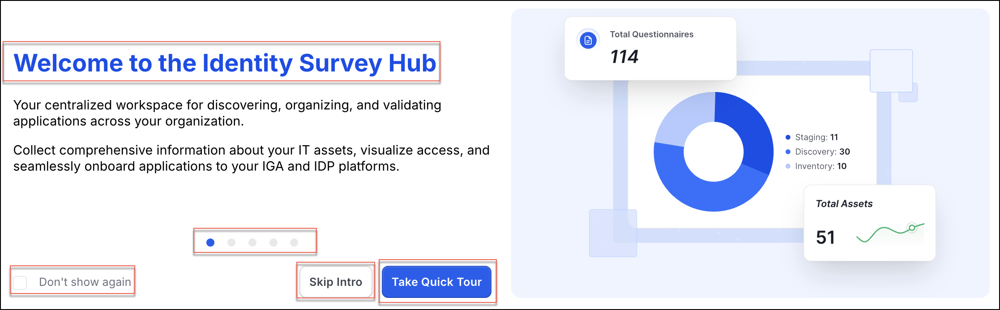
Take the Quick Tour
Perform the following steps to take the quick tour to help you become familiar with the platform:
- Click Take Quick Tour to start a guided walkthrough of the Inventory workflow.
- Each step includes short videos that explain key features and actions.
- Use Next to move to the following screen.
- Use Back to return to the previous screen if you want to review any information again.
- After reviewing all steps and understanding the inventory flow, click Complete Tour to finish the walkthrough. Once completed, you can start using the application confidently.
Note: If you don’t want to see this introduction again, you can select Don’t show again or click Skip Intro to go directly to the application.
Settings
The Settings section describes the foundational configuration required before initiating asset collection workflows. These settings should be completed by Admins before distributing surveys or creating staging/discovery collections. Proper configuration ensures smooth operation, efficient management of organizational data, and timely email notifications.
Select the Settings icon in the top-right corner to display the different available settings.
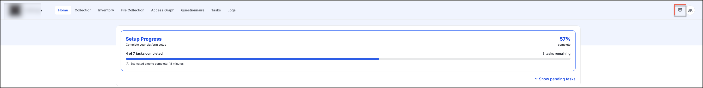
As an administrator, you can configure the following settings:
- Organization: Manage all master data of an organization.
- Users: Add, manage, and list all users.
- Notifications: Create, manage, and list all email templates.
- File Collection: Configure audit file uploads, global FTP configurations, IGA global settings, and file retention settings.

Organization
The Organization section allows administrators to manage all master data for the organization in one place. It defines the core identity of the organization and the operational defaults used across surveys, notifications, and workflows.
The Organization section includes the following tabs:
Basic Details
The Basic Details tab allows administrators to view and manage the administrator and organization details. It has the following sections:
Admin Details
- Admin Name: Name of the admin.
- Admin Email: Admin's Email ID.
Organization Details
The Organization Details section allows administrators to view and manage organization details. By default, this section displays some of your organization’s data, which was added during tenant creation. As an administrator, you must ensure that all your organization’s details are accurate.
You can add missing information or update existing details by following these steps:
- Click Edit Details. The Organization Details pop-up window appears.
- Enter the following data in the Organizational Details pop-up window:
- Organization Name: Enter your organization's name.
- Website URL: Enter your organization’s website address.
- Company Domain: Enter your company domain.
-
Upload Your Logo: Use the Upload button to upload your organization's logo. Perform the following steps:
- Click the Upload button.
- Browse and select a file from your computer.
- Click Open to upload the selected file. The uploaded file will appear under the Upload Your Logo section.
- Organization Address: Enter your organization’s address.
- Support Contact Email: Enter the support team’s email address.
- Contact: Enter the support team’s phone number.
- Preferred Language: Enter your preferred language.
- Time Zone: Enter your time zone.
- Click Save to finalize the organization details. The updated information will be displayed in the Organization Details section.
IGA Platform Configuration
The IGA Platform Configuration tab allows administrators to configure IGA applications.
Perform the following steps to add a new IGA application:
Note: The fields marked with a red asterisk (*) are mandatory.
- Navigate to the IGA Platform Configuration tab.
- Click Add New IGA. The Add New IGA pop-up window appears.
- Enter the following information in the Add New IGA pop-up window:
- Select an IGA Platform: Choose your IGA application from the drop-down menu.
- Connection Name: Enter a name for the connection.
- Hostname: Enter the hostname.
- Client ID: Enter the client ID.
- Client Secret: Enter the client secret.
- Click Save Configuration after completing all required fields. The added IGA application will appear in the IGA Platform section.
The IGA Platform Configuration tab displays a list of all configured IGA applications along with the following details:
IGA Platform Details |
Description |
| IGA Name | Displays the IGA applications that have already been configured. |
| Connection Name | Shows the connection name associated with the corresponding IGA application. |
| Action |
The following are the available actions:
|
Perform the following steps to edit the existing IGA application or delete it:
- Select the IGA application you want to edit or delete.
- Click Edit. The Edit IGA screen appears.
- Update the existing application data as needed.
- Click Save Configuration to apply your changes.
- Click the Delete icon. The Delete IGA Credential pop-up window appears. Click Delete to remove the selected IGA application.
Entity Configuration
The Entity Configuration tab allows administrators to manually add asset types and determine whether each type is system-defined or a custom category.
Perform the following steps to add a new asset type:
- Navigate to the Entity Configuration tab.
- Click Add Asset Type. The Add New Asset Type pop-up window appears.
- Enter the name of your new asset type in the Asset Type Name field.
- Click Add. The added asset type appears in the Asset Types section.
The Entity Configuration tab displays a list of all asset types along with the following details:
| Asset Type Details | Description |
| Asset Type | Displays the name of your asset type. |
| Added By |
Indicates who created the asset type:
|
| Status | Indicates whether the asset type is enabled or disabled for use. |
| Action |
Specifies Edit permissions:
|
Perform the following steps to edit an existing custom asset type:
- Select the custom asset type you want to edit.
- Click Edit. The Edit Asset Type pop-up window appears.
- Enter the updated name in the Asset Type Name text box.
- Click Update to apply your changes.
Perform the following steps to delete a custom asset type or disable a system asset type:
- Select the custom or system asset type you want to delete or disable.
- Click the vertical ellipsis icon (⋮) to display the available options. Depending on the asset type, the following options appear:
- For a custom asset type, the Delete option appears.
- For a system asset type, the Disable option appears.
- Click Delete. A confirmation pop-up window appears. Click Delete to remove the selected custom asset type.
- Click Disable to disable the system asset type for further use.
Perform the following steps to enable a disabled asset type:
- Select the disabled system asset type you want to enable.
- Click the vertical ellipsis icon (⋮). The Enable option appears.
- Click Enable to make the asset type available for further use.
Users
The Users section allows administrators to manage access to the Identity Survey Hub in a role-based manner. It explains how to add users who assist in completing the asset inventory process and assign roles based on their responsibilities.
The Identity Survey Hub offers different roles for users depending on their intended use. Each user will have one of the following roles:
- Admin
- Asset Owner
- Collaborator
- Read Only
- File Uploader
- Survey Recipient (This is not an official role, but rather refers to a user who has received an invitation to participate in the survey)
Each role has its distinct features, allowing role holders to carry out specific tasks related to their roles as described in the Roles and Responsibilities section.
Perform the following steps to add a user to the tenant and assign a role:
Note: The fields marked with a red asterisk (*) are mandatory.
- Navigate to the Users section in the left panel under the Settings screen.
- Click Add New User. The Add New User pop-up window appears.
- On the Add New User pop-up window, click the Upload icon. Browse and select a user photo, then click Open. The selected photo will be added as the user’s profile picture.
- After uploading the profile photo, enter the following details:
- Name of the User: Enter the user's full name.
- User Email: Enter the user's email address.
- User Role: Select a role from the dropdown list. Available roles include Admin, Asset Owner, Collaborator, Read Only, and File Uploader.
- Manager Name: Enter the user's manager name.
- Manager Email: Enter the manager's email address.
- Click Add User to add the user with the specified role. The added user will appear in the Users section.
The Users section displays a list of all users along with the following details:
| User Details | Description |
| User | Displays the name and email address of the user. |
| Role | Displays the role assigned to the user. |
| Manager | Displays the name and email address of the user’s manager. |
| Added On | Displays the date the user was created. |
| Action | Edit: Allows you to modify the user’s existing details. |
Perform the following steps to update a user:
- Select the user you want to edit. You can use the Search users box to find a specific user.
- Click Edit. The Edit User pop-up window appears.
- Update the user data as needed.
- Click Edit User to apply the changes.
Perform the following steps to delete a user:
- Select the user you want to edit. You can use the Search users box to find a specific user.
- Click the vertical ellipsis (⋮) to display the Delete option.
- Click Delete. A confirmation pop-up window appears. Click Delete to remove the selected user.
Notifications
The Notifications section allows administrators to create and manage email templates and configure the sender email address across all processes. It consolidates all templates in a centralized location for streamlined access and efficient management.
The Notification section includes the following tabs:
Email Templates
The Email Templates tab allows administrators to create and manage email templates.
Perform the following steps to create an email template:
- Navigate to the Notifications section in the left panel under the Settings screen.
- Click Create Email Template under the Email Templates tab. The Create Email Template screen appears.
- Enter the following details in the Create Email Template screen:
- Template Name: Enter a name for the email template.
- Template Type: Select the required email template type from the dropdown list.
- Subject: Enter the subject line for the email template.
- In the Upload Your Logo section, upload a logo by following these steps:
- Click the Upload button.
- Browse and select a file from your computer.
- Click Open to upload the selected file. The uploaded file will appear under the Upload Your Logo section.
Note: The aspect ratio of the logo should be 120x35px, and the max file size is 3 KB.
- Use the Rich Text Editor to define the email body content.
- Select a variable from the Add Variable dropdown list.
- Enter the content directly as it should appear in the email.
- Use the Preview panel to view a real-time preview of the email.
-
To send a test email, perform the following steps:
- Click Test Email in the Preview section to open the Test Email pop-up window.
- Enter an email address in the Test Email ID field.
- Click Send Test Email to send the test email to the specified email address.
- Click Save once all required fields are completed to save your template. The added email template will appear in the Email Templates tab.
The Email Templates tab displays a list of all email templates along with the following details:
| Email Template Details | Description |
| Name | Displays the name of the email template. |
| Type | Specifies the type of the email template. |
| Subject | Displays the subject line of the email template. |
| Created On | Displays the date the email template was created. |
| Action |
The following are the available actions:
Note: The Edit option is available only for custom email templates created by the administrator. Global email templates (in-built questionnaires) have only the View option. |
Perform the following steps to edit an existing custom email template:
- Select the custom email template you want to edit. You can use the Search Email Template box to find a specific email template.
- Click Edit. The Edit Email Template screen appears.
- Update the template data as needed.
- Click Save to apply the changes.
Perform the following steps to view an existing global email template:
Note: The Edit option is not available for global email templates. They are non-editable by design and can only be viewed. However, you can use them to create a new email template.
- Select the global email template you want to view. You can use the Search Email Template box to find a specific email template.
- Click View to display the email template.
Perform the following steps to delete or create a copy of an email template:
- Select the email template you want to delete or copy.
- Click the vertical ellipsis icon (⋮) to display the available options. Depending on the template type, the following options appear:
- For a custom email template, the Delete and Create Copy options are available.
- For a global email template, only the Create Copy option is available.
- To delete an email template, perform the following steps:
- Click Delete. A confirmation pop-up window appears.
- Click Delete to remove the selected email template.
- To create a copy of an email template, perform the following steps:
- Click Create Copy to duplicate the selected email template.
- Modify the copied template as needed.
- Click Save Copy to save it as a new template while keeping the original unchanged.
Sender Configuration
The Sender Configuration tab allows administrators to configure the email address of the sender.
Perform the following steps to add an email address:
- Navigate to the Sender Configuration tab.
- Click Add Email. The Add Domain pop-up window appears.
- Enter the following data in the Add Domain pop-up window:
- Sender Email Address: Enter the sender's email address that will appear in the From field of all notifications.
- Sender Display Name (Optional): Enter a friendly name that recipients will see. If left blank, only the email address will be shown.
- Click Send Verification Email. The verification email will be sent to the corresponding email address. As a recipient of the verification email, perform the following:
- Check your email inbox for an email verification request.
- Click the verification link in the email. This link will confirm your domain ownership.
- After successfully verifying an email address, you can start sending emails from this address.
- Click Resend Email if you do not receive the verification email due to any issue.
- Click Complete Setup, and the added email address will appear in the Sender Email Address section.
The Sender Configuration tab displays a list of all sender email addresses along with the following details:
Sender Configuration Details |
Description |
| Displays senders' email addresses. | |
| Status |
Shows the current state of the email verification:
|
| Action |
The following are the available actions:
|
Perform the following steps to set a primary email address for notifications and delete an email address:
- Select the sender email address you want to set as the primary address or delete.
- Click the vertical ellipsis icon (⋮) to display the available options. Depending on the email verification status, the following options appear:
- For SUCCESS status, the Set Primary and Delete options are available.
- For PENDING status, only the Delete option is available.
- Click Set Primary. The Set Primary Email pop-up window appears. Click Continue to set the selected email address as the primary address for sending notifications.
- Click Delete. A confirmation pop-up window appears. Click Delete to remove the selected sender email address.
File Collection
The File Collection section allows administrators to configure audit file upload settings, global FTP configurations, IGA global settings, and file retention settings for applications in a centralized location for streamlined access and efficient management.
Perform the following steps to configure file collection settings:
- Click the Settings icon at the top right corner of the page in the Identity Survey Hub portal.
- Navigate to the File Collection section in the left panel under the Settings screen.
The File Collection section includes the following tabs:
Configuration
The Configuration tab allows administrators to configure audit file uploads for applications. These audit files can include images or videos of user data that serve as audit proof.
Note: When the audit file configuration is updated in this tab, the same changes are reflected in the Advanced Configuration tab for the application.
The following table lists the columns displayed in the Configuration tab:
| Column | Description |
| Application | The name of the application. |
| Screenshot Upload | Indicates whether screenshot uploading for audit files is enabled or disabled. |
| Video Upload | Indicates whether video uploading for audit files is enabled or disabled. |
| File Upload Instructions | Instructions are displayed to the file uploader for the application. |
Configuring Audit File Upload for a Single Application
Perform the following steps to configure audit file uploads for a single application:
- Hover over an application row and click Configure. The File Configuration pop-up window appears.
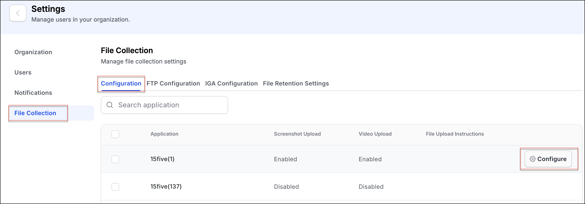
- In the File Configuration pop-up window, provide the following information:
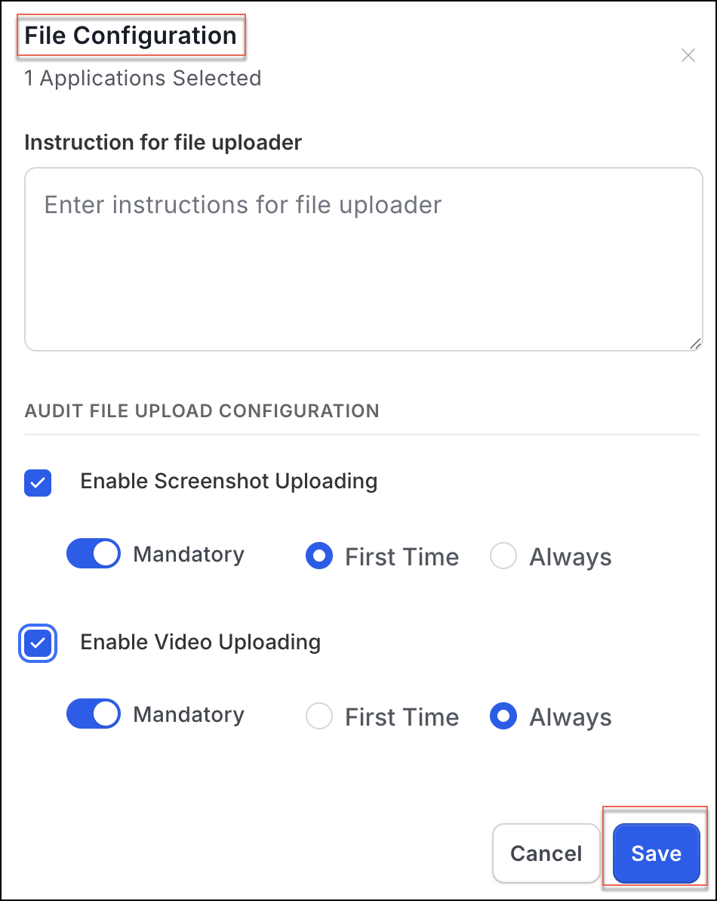
- Enter instructions for the file uploader in the Instructions for file uploader field. This field allows a maximum of 500 characters, including spaces.
Note: These instructions appear in the application’s Upload tab when a file is uploaded. - Select Enable Screenshot Uploading to allow image uploads as audit proof.
The file uploader will see an option to upload a Screen Capture (Image) in the application’s Upload tab.
You can enable the Mandatory toggle and select First-Time or Always, depending on whether the screenshot is required only for the first upload or for every upload.
Note: Supported screenshot formats are PNG, JPG, JPEG, and BMP. - Select Enable Video Uploading to allow video uploads as audit proof.
The file uploader will see an option to upload a Screen Recording (Video) in the application’s Upload tab.
You can enable the Mandatory toggle and select First-Time or Always, depending on whether the video is required only for the first upload or for every upload.
Note: Supported video formats are MP4, MOV, and M4V.
- Enter instructions for the file uploader in the Instructions for file uploader field. This field allows a maximum of 500 characters, including spaces.
- Click Save to save the configuration.
Configuring Audit File Upload for Multiple Applications
Perform the following steps to configure audit file upload for multiple applications:
- Select the checkbox for each application, then click Configure. The File Configuration pop-up window appears.
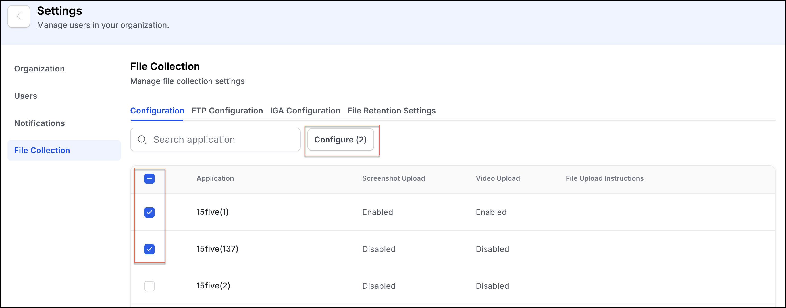
- In the File Configuration pop-up window, provide the following information:
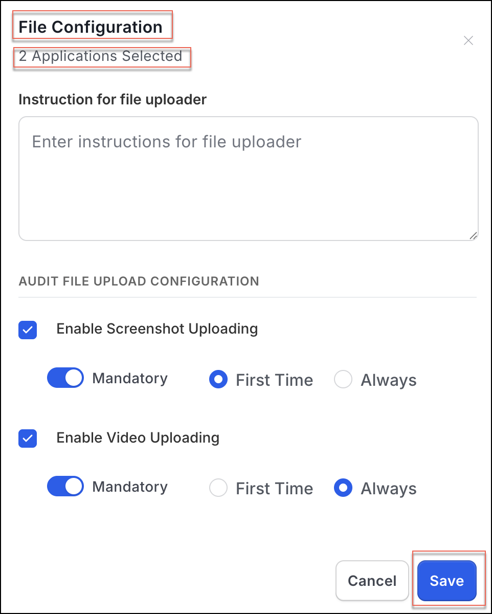
- Enter instructions for the file uploader in the Instructions for file uploader field. This field allows a maximum of 500 characters, including spaces.
Note: These instructions appear in the application’s Upload tab when a file is uploaded. - Select Enable Screenshot Uploading to allow image uploads as audit proof.
The file uploader will see an option to upload a Screen Capture (Image) in the application’s Upload tab.
You can enable the Mandatory toggle and select First-Time or Always, depending on whether the screenshot is required only for the first upload or for every upload. Note: Supported screenshot formats are PNG, JPG, JPEG, and BMP. - Select Enable Video Uploading to allow video uploads as audit proof.
The file uploader will see an option to upload a Screen Recording (Video) in the application’s Upload tab.
You can enable the Mandatory toggle and select First-Time or Always, depending on whether the video is required only for the first upload or for every upload. Note: Supported video formats are MP4, MOV, and M4V.
- Enter instructions for the file uploader in the Instructions for file uploader field. This field allows a maximum of 500 characters, including spaces.
- Click Save to save the configuration.
FTP Configuration
The FTP Configuration tab allows administrators to store uploaded files in Aquera storage or on an SFTP server. This enables the system to access resource data and schema information for applications.
Add and Manage FTP Configuration
Perform the following steps to add a new FTP configuration or manage existing FTP configurations for storing uploaded files on an SFTP server:
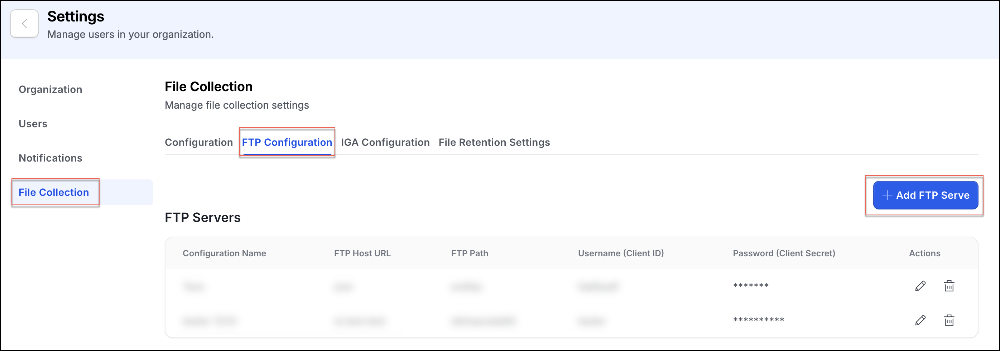
- Navigate to the FTP Configuration tab.
- Click Add New FTP. The Add New FTP Connection pop-up window appears.
- Enter the following data in the Add New FTP Connection pop-up window:
- Configuration Name: Enter a name for the SFTP server configuration.
- FTP Host URL: Enter the hostname of the SFTP server where you want to store the files, followed by the port number for communication. The format is {hostname}:{port number}. For example, aquera:8080.
-
FTP Server Directory Path: Provide the directory path on the SFTP server to store the files. For example, /Aquera/Files.
Note: If the path is edited later, previously uploaded files will not be available in the new path. - Username/Client ID: Provide the username or the client ID required to access the SFTP server.
- Password/Client Secret: Provide the password or the client secret required to access the SFTP server.
- Click Add FTP to add the configuration. Once the configuration is added successfully, it will be listed under the List of FTP servers section.
- Perform the following steps to modify an FTP configuration:
- Click the Edit icon () for the configuration.
- Make the required changes in the Edit FTP Connection pop-up window.
- Click Update FTP to save your configuration.
- Perform the following steps to delete an FTP configuration:
- Click the Delete icon (
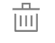
) for the configuration you want to remove. - In the Delete FTP Connection dialog box, click Delete. The selected FTP configuration will be deleted and removed from the List of FTP servers section.
Note: An FTP configuration cannot be deleted if it is currently being used by an application.
- Click the Delete icon (
IGA Configuration
The IGA Configuration tab allows administrators to correlate data uploaded in the application with the list of users obtained from a file downloaded from an Identity Governance and Administration (IGA) system, such as SailPoint or Okta.
It enables uploading an IGA file and configuring a schedule for file uploads. It also provides an option to enable correlation checks, which automatically compare data during each file upload.
When the correlation check is enabled, a report showing the number of mismatched records is generated during each data file upload.
Enable Correlation Checks and Set Upload Schedule
Perform the following steps to enable the correlation check and set the IGA file upload schedule:
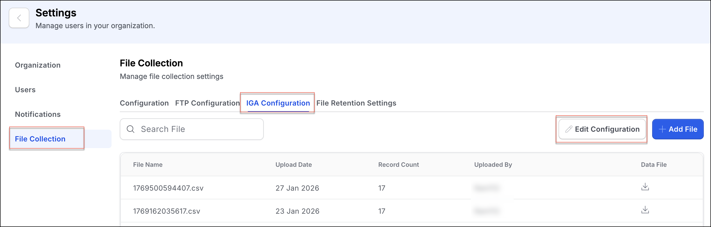
- Navigate to the IGA Configuration tab.
- Click Edit Configuration. The IGA Global Configuration pop-up window appears.
- In the IGA Global Configuration pop-up window, enable the Global Correlation Check toggle.
Note: If this setting is disabled, the correlation check will not be performed during the data file uploads.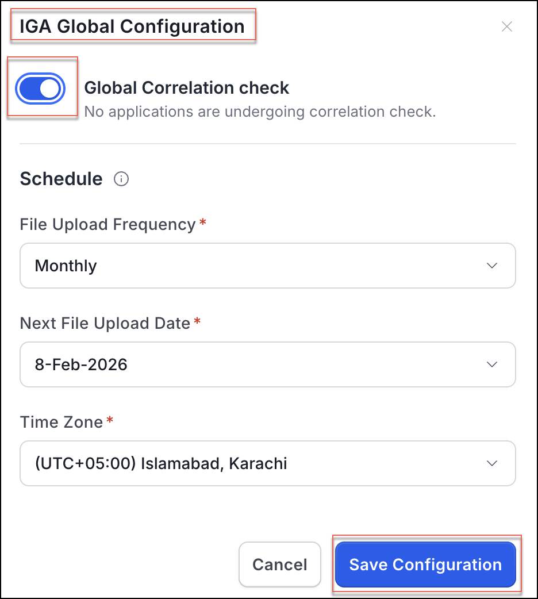
- Set the following configuration under the Schedule section:
- File Upload Frequency: Specifies how often the IGA file must be uploaded. The dropdown options are: Weekly, Monthly, Quarterly, and Yearly.
- Next File Upload Date: The due date for the next IGA file upload. For example, if the File Upload Frequency is set to Weekly and the Next File Upload Date is 16-January-2026 (a Friday), the file upload will be due every Friday.
- Timezone: The timezone that should be followed for the file upload schedule.
- Click Save Configuration to apply your settings.
An email reminder for the IGA file upload is sent to the corresponding asset owners and admin users on the due date.
Upload IGA File
You must upload the IGA file in one of the following formats: CSV, XLS, or XLSX. The file must include a column that serves as the correlation attribute, which is used to match user data during data file uploads.
Perform the following steps to upload the IGA file downloaded from the IGA system:
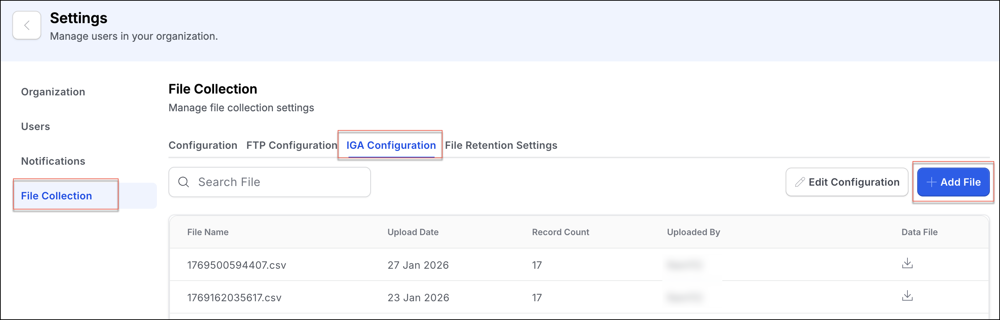
- Navigate to the IGA Configuration tab.
- Click Add File. This opens your system’s file browser.
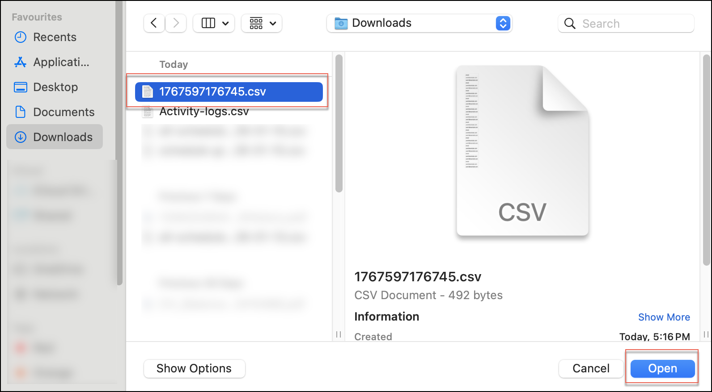
- Browse your system folders and select the IGA file downloaded from the IGA system.
-
Select the file and click Open. The IGA file is uploaded, and a record is displayed in the IGA Configuration tab with the following details in a tabular format:
Column Description File Name The name of the uploaded IGA file. Upload Date The date when the file was uploaded. Record Count The total number of data records in the file. Uploaded By The username of the user who uploaded the IGA file. Data File Provides an option to download the uploaded file. - Use the Search File text box to find a specific uploaded file.
File Retention Settings
The File Retention Settings tab allows administrators to configure how long uploaded files and their history are retained. Once the defined retention period expires, both the uploaded file and its upload history records are automatically deleted.
Perform the following steps to configure file retention settings:
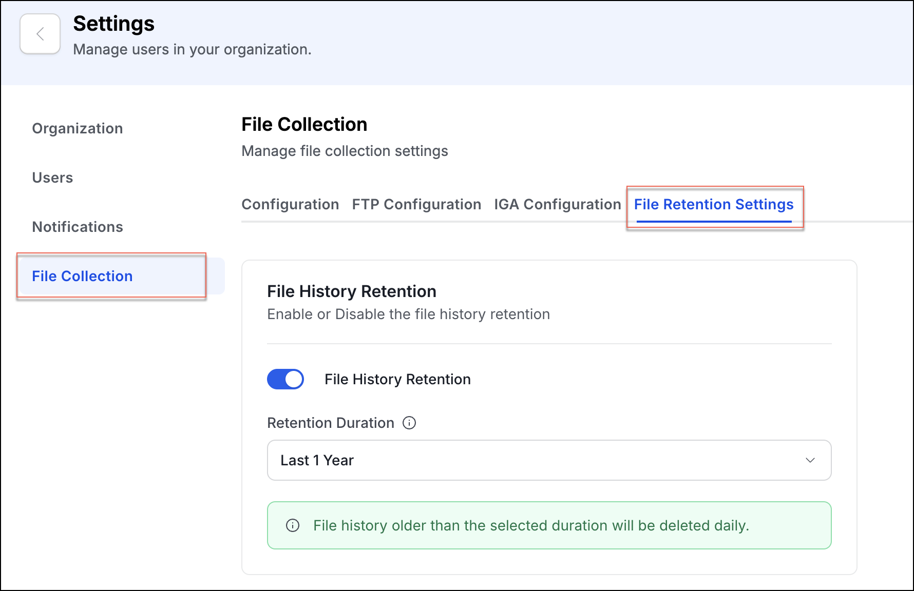
- Navigate to the File Retention Settings tab.
- By default, the File History Retention toggle is enabled. The Retention Duration field is visible only when this toggle is enabled.
- Select the desired duration for retaining file upload history in the Retention Duration field. Available retention duration options are:
- Last 6 Months
- Last 1 Year
- Last 2 Years
- The retention settings are saved automatically as soon as you select a duration.
Upload history records and files older than the selected duration (calculated from the current date) will be deleted weekly.
- Deletion is scheduled to run every Sunday.
- For example, if Last 6 Months is selected, all upload history records and associated files older than six months from the current date will be deleted weekly.
Note: If a file was not uploaded on the scheduled date, the file history will show a record with the status Missed. These records will not be deleted and will remain in history.
Primary Interfaces
The Identity Survey Hub contains the following main tabs:
- Home: This tab serves as your starting point upon logging in, offering quick access to essential configurations, including adding and managing email domains and templates, defining asset categories, managing users, and customizing questionnaires and surveys.
- Collection: This tab acts as the operational hub, where you initiate and manage surveys, as well as staging and discovery workflows.
- Inventory: In this tab, fully validated and enriched asset data is formally transferred into the official asset catalog, and onboarding it to the IGA/SSO platform, which is the final step in the asset lifecycle.
- File Collection: This tab enables administrators to collect and display identity data from a disconnected application using a file-based approach.
- Access Graph: This tab provides a comprehensive overview of key metrics, including total users, total applications, active roles, and privileged access.
- Questionnaire: This tab enables administrators to create and manage questionnaires for the survey, staging, discovery, inventory, and onboarding phases, and gathers all questionnaire templates in one centralized location for easy access and management
- Tasks: This tab presents a centralized interface for creating, tracking, and managing all asset-related tasks with ease and efficiency.
Home
The Home tab serves as your starting point upon logging
in, offering quick access to essential configurations, including adding and
managing email domains and templates, defining asset categories, managing
users, and customizing questionnaires and surveys. You will see a personalized
welcome banner with an encouraging prompt to explore the platform. The
Setup Progress tracker shows the total tasks completed (for
example, 0 of 7 Tasks Completed), with an estimated time to finish. This
gives you a clear snapshot of onboarding progress and remaining setup steps.
This Setup Progress section is visible only once. After you complete all 7 steps, it will no longer be displayed under the Home tab. Once the setup is complete, logging in to the portal will take you directly to the Survey tab under Collection.
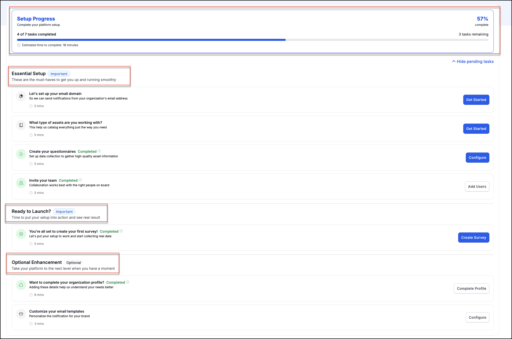
Essential Setup
These are the foundational tasks or prerequisites needed to get your Identity Survey Hub platform up and running:
Set Up Email Domain
Configure your email domain to ensure that automated emails appear authentic and professional, coming from your own organization.
Click Get Started and refer to the Sender Configuration section to configure the email domain.
Configure Asset Categories
Create a logical structure for organizing assets to enhance navigation and management.
Click Get Started and refer to the Asset Types section to configure asset types.
Configure Questionnaires
Design a consistent, automated form to capture high-quality asset information every time you add an asset.
Click Configure and refer to the Create and Manage Questionnaires section to create and manage questionnaires for the survey, staging, discovery, inventory, and onboarding phases.
Invite Users
Facilitate team collaboration by inviting users and defining their access rights within asset workflows.
Click Add Users and refer to the Add and Manage Users section to add the relevant users and assign each of them a role to assist with completing the asset inventory process.
Ready to Launch
Create and deploy your first survey to start collecting valuable insights about your asset.
Create Your First Survey
Follow the complete workflow to see how your setup works together to collect meaningful data about assets.
Click Create Survey and refer to the Admin Workflow: Creating and Managing Asset Surveys section to create and manage surveys aimed to gather preliminary information about IT assets.
Optional Enhancement
Complete the following settings if you would like to further customize your platform beyond the basics:
Add More Organization Details
Provide comprehensive information about your organization to enrich workflows and reporting.
Click Complete Profile and refer to the Basic Details section under Organization to add more organization details.
Configure Email Templates
Streamline communication with branded, automated templates for emails (for example, invites and notifications).
Click Configure and refer to the Create and Manage Email Templates section to customize email templates for communication across all processes.
Dashboard
This section explains each part of your dashboard, its purpose, and how to interpret the data for effective asset management.
Summary Metrics
This section provides a clear visual overview of all assets currently in the pipeline. It shows the total number of assets being managed and how they are distributed across different phases: Staging, Discovery, and Inventory. This helps you quickly assess overall activity, track progress, and identify areas that may need more attention or resources.
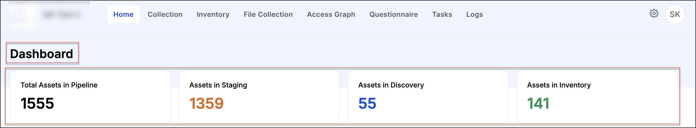
Phase Breakdown Charts
This phase breakdown chart visually displays the number of assets in each phase: Staging, Discovery, and Inventory. Each chart uses different colors to represent asset statuses, giving a quick snapshot of progress within each phase.
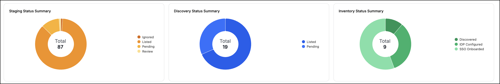
Asset Ownership Overview
This section displays the distribution of assets among asset owners and indicates the current stage of each asset.
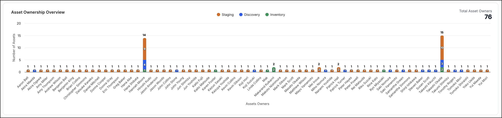
Asset Types Distribution
The asset types distribution bar chart shows the number of assets by type, such as Application, Cloud, Cloud Storage, Data Storage, SaaS Application, and others. It helps you understand which types of assets are most common and how they are distributed across different phases.
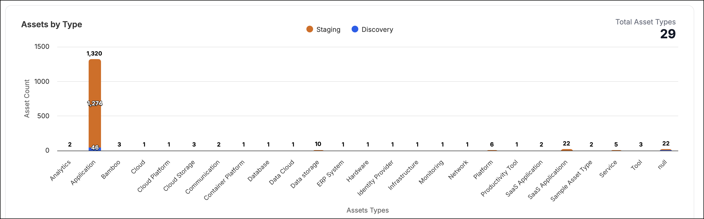
Questionnaire Progress
The questionnaire management bar chart tracks progress by questionnaire status. It shows how much of each questionnaire has been completed, not started, and pending, and helps you identify which ones need follow-up or additional effort.
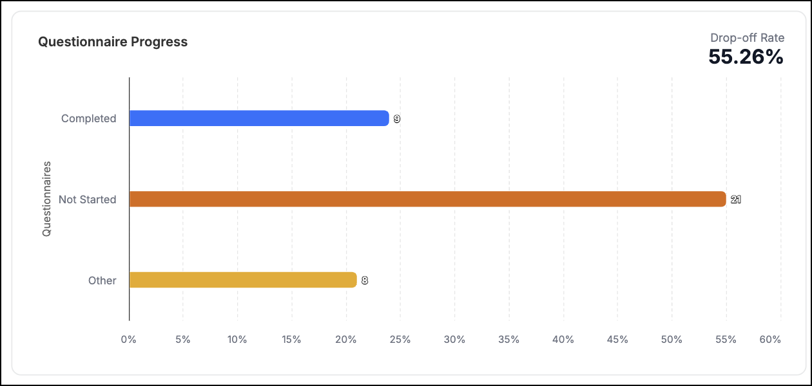
Questionnaires by Asset Type
The questionnaires by asset type pie chart shows the percentage of active questionnaires distributed by asset type. This helps you see which types of assets require the most attention for questionnaire completion, aiding in resource planning for compliance and data collection.
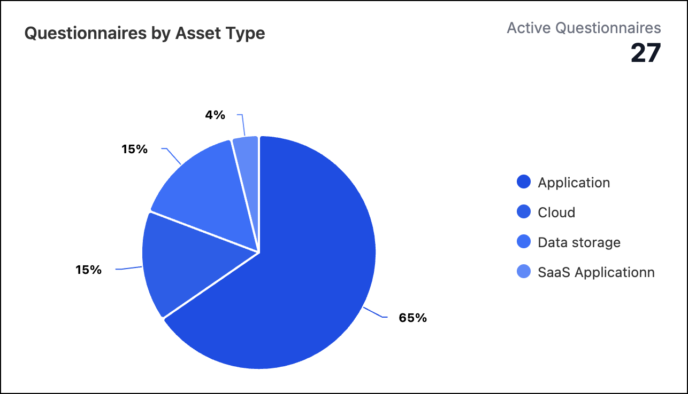
Question Completion Quality
This section displays the completeness of the questionnaires, indicating the percentage of mandatory fields and optional fields that have been filled out.
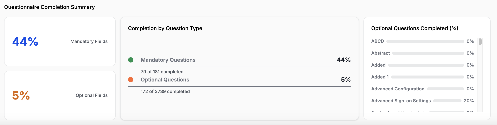
On the right, a list shows the completion percentage for each questionnaire section.This breakdown helps identify which sections need more attention, allowing teams to focus on improving overall completion rates.
Collection
The Collection tab serves as your operational hub, where you initiate and manage surveys, staging, and discovery workflows.
Lifecycle of the Asset
The Asset Lifecycle consists of several key stages that represent the journey of an IT asset from identification to full cataloging:

- Survey: The initial phase involves administrators sending simple questionnaires to asset owners or relevant stakeholders to collect basic information about IT assets.
- Staging: In this intermediate phase, the collected survey data undergoes validation and enrichment. This ensures the information is accurate and comprehensive, facilitating deeper discovery and preparation for subsequent onboarding activities.
- Discovery: This phase involves a collection of detailed data about IT assets through extended questionnaires. The gathered information is then validated and enhanced as necessary to support the final onboarding process.
- Inventory: The final stage involves transferring fully validated and enriched asset data into the official asset catalog and onboarding it to the IGA/SSO platform. This ensures accurate tracking, compliance, and effective management of IT assets throughout their lifecycle.
Survey
The initial phase involves collecting data through surveys distributed to asset owners or relevant stakeholders. These surveys aim to gather preliminary information about IT assets.
This section describes the workflows for both Admins and Survey Recipients. Admins are responsible for creating, configuring, and distributing asset surveys, as well as managing responses and suggestions. Survey Recipients complete the surveys by providing basic asset information for validation and further enrichment in later phases.

Roles & Their Responsibilities
The following table lists the key actors involved in the survey phase and their respective responsibilities:
| Role | Responsibilities |
| Admin |
|
| Survey Recipients |
|
Survey Recipient Lifecycle Stages, Description, and Actions
The table outlines the various stages a Survey Recipient undergoes, along with the corresponding actions and descriptions associated with each stage:
| Status | Description | Available Action |
| Pending | The survey has been sent, and the recipient has not responded yet | Remind |
| Completed | The recipient has responded to the survey | View |
| Overdue | The due date has passed, and the survey recipient who has not responded to the survey | Escalate |
| Opted Out | The recipient who has withdrawn from the survey | View |
| Transferred | The recipient who has reassigned the survey to another user | View |
Survey Lifecycle Stages, Description, and Actions
The table outlines the various stages a survey undergoes, along with the corresponding actions and descriptions associated with each stage:
| Status | Description | Available Action |
| Scheduled | The survey is created, and the start date is in the future | Launch |
| Started | The current date falls between the start and due dates, and not all survey recipients have responded to the survey | Remind |
| Completed | All survey recipients have submitted their responses | View |
| Overdue | The due date has passed, and there are still a few survey recipients who have not responded to the survey | Escalate |
| Closed | Surveys in Completed or Overdue status are automatically transitioned to Closed seven days after the due date. If recipients need more time to complete the survey, or if Admins require additional input from recipients, the due date can be extended | Extend |
Admin Workflow: Creating and Managing Asset Surveys
As an Admin, perform the following steps to create and manage a survey:
Create Survey
- Log in to the Identity Survey Hub portal and navigate to the Survey tab located under Collection at the top left corner of the screen.
- Click Create Survey at the top right of the screen, and the Asset Request Survey screen appears.
- Enter the following survey details on the Asset Request Survey screen:
-
Basic Details
- Survey Name: Enter a name for your survey.
- Survey Request Questionnaire: Choose the appropriate questionnaire from the dropdown list. For example, select Asset List Survey. Click the Preview option located above the dropdown to view the selected questionnaire form in the Preview panel.
- Recipients: Enter the recipients’ email addresses or select them from the list that appears when you click the field.
- Start Date: Set the start date for the survey.
- Due Date: Set the deadline for survey completion.
-
Email Templates
- Survey Email Template: Choose the email template to be used for the survey from the dropdown list. Click the Preview option located above the dropdown to view the selected email template in the Preview panel.
- Reminder Email Template: Choose the reminder email template from the dropdown list. Click the Preview option located above the dropdown to view the selected reminder email template in the Preview panel.
- Days Before Deadline to Send Reminder: Set how many days before the due date the reminder should be sent.
- Escalation Email Template: Choose the escalation email template from the dropdown list. Click the Preview option located above the dropdown to preview the selected escalation email template in the Preview panel.
- Days After Deadline to Escalate: Set how many days after the due date the escalation should be sent.
- Escalate To: Enter the email address of the user who should receive escalation notifications.
- Allow recipients to opt out: Select this check box to allow survey recipients to opt out of the survey that does not apply to them. If the check box is not selected, survey recipients must complete the survey.
-
Basic Details
- Click Create Survey to distribute the survey to the intended recipients after completing all required fields and configurations.
Survey Recipient Summary Panel
Once the survey is created, view the survey summary at the top of the Survey tab. This section provides real-time visibility into survey progress, including:
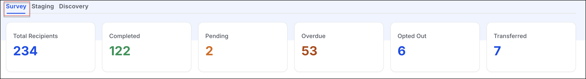
- Total Recipients: Total number of survey recipients.
- Completed: Number of recipients who have completed the survey.
- Pending: Number of recipients who have not started the survey and whose responses are still pending.
- Overdue: Number of recipients who have not completed the survey past the due date.
- Opted Out: Number of recipients who have opted out of the survey.
- Transferred: Number of recipients who have reassigned the survey to another user.
Note: To filter by a specific status, simply click on the corresponding status. The details of its recipients will appear in the survey recipient table.
View Detailed Survey and Recipient Information
Below the survey recipient summary panel, detailed survey information is displayed in two sections:
Survey List Panel (Left Side)
This Survey List Panel displays an overview of all the surveys and gives the following data:
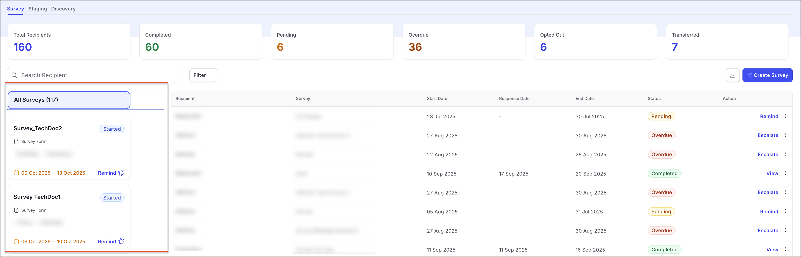
Note: To filter by a specific survey, click on that survey. The details of its recipients will appear in the survey recipient table.
- Title of the survey
- The current state of the survey (e.g., Started, Scheduled, Closed, Overdue, Completed)
- The questionnaire that is assigned to the survey
- Number of participants
- Start date and end date of the survey
- Action buttons such as: (Refer to the Survey Lifecycle Stages, Description, and Actions section for more details)
- Extend: Extend the due date if recipients need more time to complete the survey, or if Admins require additional input from recipients.
- Launch: Start sending the survey before the scheduled time.
- Remind: Send a follow-up reminder to recipients who haven’t responded.
- Escalate: Escalate overdue recipients to the designated contacts.
- View: View the completed survey details.
Survey Recipient Table (Right Side)
This Survey Recipient Table provides recipient-level tracking.
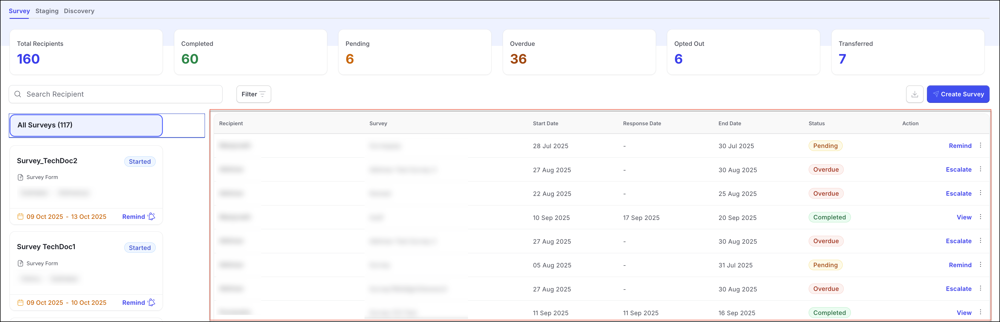
Note: Select All Surveys on the left side to display the full list of recipients across all surveys, or select an individual survey to view its specific recipients.
- Recipient: Name of the survey recipients.
- Survey: The survey to which recipients were assigned (e.g., Survey 1).
- Start Date: The date when the survey was started.
- Response Date: The date when the response was received.
- End Date: The date by which the response is expected.
- Status: Shows the current response status (e.g., Completed, Pending, Overdue, Transferred, Opted Out)
- Survey actions such as: (Refer to the Survey Recipient Lifecycle Stages, Description, and Actions for more details)
- Remind: Send a follow-up reminder to recipients who haven’t responded.
- Escalate: Escalate overdue responses to the designated contacts.
-
View: Allows viewing individual survey responses when the survey status is Completed, Transferred, or Opted Out. Selecting this option opens a new screen with additional details.
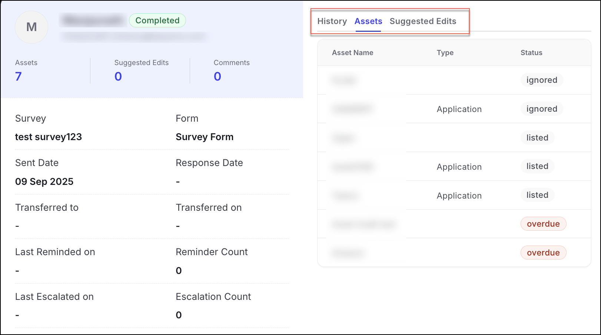
- History: The History tab displays a chronological log of all actions taken during the survey process.
- Assets: The Assets tab shows a list of assets associated with the recipient. Click View to see asset details such as asset name, user count, asset owner, and other relevant information.
- Suggested Edits: The Suggested Edits tab displays proposed changes submitted by other recipients for the asset details. Click Expand to review the full details of each suggestion, then choose to Accept or Reject individual edits. You can also select Accept All or Reject All when multiple edits are available.
-
View Details: You can also access this same screen by clicking the vertical ellipsis (⋮) next to the action button for any recipient and selecting View Details.
Note: View and View Details open the same screen and display identical information.
Other Features
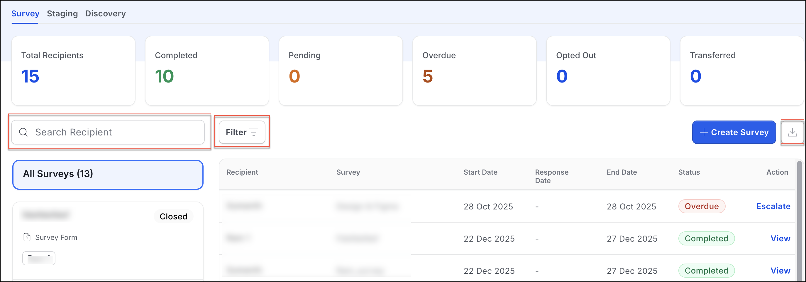
Search Recipient
Use the Search Recipient search bar located above the survey list panel to locate a specific user.
Filter
Use the Filter option filter surveys by questionnaire, status, due date, response date, reminder date, or escalation date.
Download
Use the Download icon to export survey data for reporting or offline analysis.
Recipient Workflow: Completing and Responding to Surveys
As a Survey Recipient, perform the following steps to complete the asset list survey:
- Click the Complete Asset Survey button to start the survey process once you receive the asset identification survey notification through email.
- Provide the following details of the IT asset that your department uses on the Asset List Survey screen:
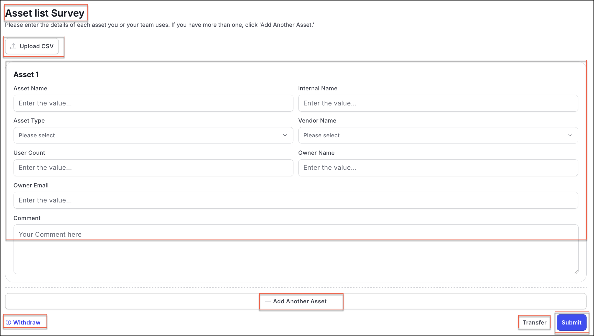
- Asset Name: Enter the asset name.
- Internal Name: (Optional) Add any internal identifier or nickname for the asset.
- Asset Type: Select the asset type from the dropdown.
- Vendor Name: Enter the vendor name.
- User Count: Enter how many users use this asset.
- Owner Name: Enter the name of the asset owner.
- Owner Email: Enter the email address of the asset owner.
- Comment: Add any relevant comments or notes.
- Click Add Another Asset if you need to provide data for additional assets.
- Click Submit once all fields are filled, and the Asset List Survey Submitted! confirmation pop-up window appears. In the confirmation window, you have two options:
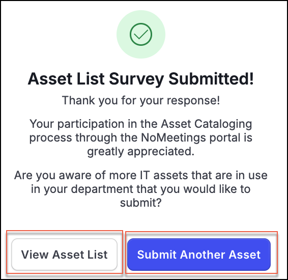
-
View Asset List:
- Click View Asset List to view all submitted assets by you and others.
- Perform the following steps in the Asset List screen if you find incorrect data for any of the assets:
- Click Suggest Changes at the end of the asset row.
- Update the incorrect value in the Asset Request Survey screen.
- Click Suggest Changes.
- The Suggestion Submitted Successfully! confirmation pop-up appears, and your suggestion will be sent to the admin for review.
- Submit Another Asset: Click Submit Another Asset to add more assets if your department uses multiple IT assets.
-
View Asset List:
- Perform the following steps to withdraw from the survey in the Asset List Survey screen if the survey does not apply to you:
- Click the Withdraw button at the bottom left corner of the screen.
- Provide your reason in the text box in the Withdrawing from Survey screen.
- Click Withdraw to confirm.
- The You have successfully withdrawn from the survey pop-up window appears, and your status will be updated as Opted Out, and no further action will be required.
- Perform the following steps in the Asset List Survey screen if you want to transfer the survey to others who can offer valuable insights about the particular asset:
- Click the Transfer button at the bottom right corner of the screen.
- Provide the following details in the Transfer Survey to Others screen:
- Name: Enter the name of the colleague to whom you want to transfer the survey.
- Email: Enter the email address of the colleague to whom you want to transfer the survey.
- Click Transfer Survey to confirm.
- The Survey Transferred Successfully! pop-up window appears, and the survey is transferred to the specified colleague.
- Use the Upload CSV button to add multiple assets manually by uploading a CSV or Excel file. Perform the following steps:
- Click the Upload CSV button.
- On the Upload CSV panel, click Download Template (CSV/Excel) to download a template file for entering multiple assets.
- Click the Click to Upload option to browse and select a file from your computer. Alternatively, you can drag and drop the file into the upload area.
- Click Upload CSV to add assets to the asset list once the file is added.
Staging
The Staging is the intermediate phase where IT assets are cataloged using surveys and structured questionnaires to build a reliable inventory foundation. During this stage, assets are primarily populated from survey responses, although a few can be added manually or imported directly from IGA applications. The collected information is then validated and enriched to create a comprehensive asset inventory that supports subsequent discovery and onboarding activities.
Assets are grouped into collection groups based on asset types. Administrators create and configure these groups, while Asset Owners and Collaborators supply the required information. This role-based coordination ensures a reliable foundation for the organization's IT asset catalog, supporting identity and access management and setting the stage for further discovery and onboarding activities.

Collection
A Collection groups related assets together, making it easier for administrators to manage the inventory by handling one set at a time. This approach enables them to validate information, send reminders, or escalate issues without being overwhelmed by the entire catalog. Because each Collection is clearly defined, administrators, asset owners, and collaborators know exactly which assets require attention and understand their status in the process. Once every asset in a collection has been reviewed and approved, those assets can move forward to the next phase.
Roles & Their Responsibilities
The following table lists the key actors involved in the staging phase and their respective responsibilities:
| Role | Responsibilities |
| Admin |
|
| Asset Owner |
|
| Collaborator |
|
Asset Lifecycle Stages, Description, and Actions
The table outlines the various stages an asset undergoes, along with the corresponding actions and descriptions associated with each stage:
| Status | Description | Available Action |
| Listed |
Asset is added to staging, but is not part of any collection Note: Assets with Listed status can be moved directly from Staging to Discovery if the admin has sufficient information about the asset. |
View, Move to Discovery, Ignore, View History |
| Scheduled | Asset is part of a collection, and the start date is in the future | View, Ignore, View History |
| Pending | Asset is part of a collection, and the current date falls between the start and due dates | Remind, View Details, Answer Questionnaire, Ignore, View History |
| Overdue | Asset is part of a collection, but the end date has passed without a response | Escalate, View Details, Answer Questionnaire, Ignore, View History |
| Review | The questionnaire for the asset has been answered and is under Admin review | View, Move to Discovery, Ignore, View History |
Ignored |
The asset is excluded from the further inventory process |
View, View History |
Collection Lifecycle Stages, Description, and Actions
The table outlines the various stages a collection undergoes, along with the corresponding actions and descriptions associated with each stage:
| Status | Description | Available Action |
| Scheduled | The collection is created, and the start date is in the future | Launch |
| Started | The current date falls between the start and due dates, and not all asset questionnaires have been answered | Remind |
| Completed | All asset questionnaires in the collection have been answered | No action |
| Overdue | The due date has passed, and there are still unanswered asset questionnaires | Escalate |
Admin Workflow: Creating and Managing Collections
As an Admin, perform the following steps to create and manage a collection:
Create Collection
- Log in to the Identity Survey Hub portal and navigate to the Staging tab located under Collection.
- Click Create Collection at the top right of the screen, and the Create Collection screen appears.
- Enter the following collection details on the Create Collection screen:
-
Basic Details
- Name of the Collection: Enter a name for your collection.
-
Assets & Questionnaires: Perform the following steps to select your desired assets and their respective questionnaire to create a collection:
- Click the Add Assets button, and the Add Assets screen appears.
- In the Add Assets screen, the Asset Library table displays only assets with a listed status that are not yet part of any collection.
- Select your assets and click Add to move them one by one to the Added Assets table.
- To remove an asset from the Added Assets table, click Remove.
- Click Save once you have chosen all the assets for your collection.
- The assets that you add will appear on the Assets & Questionnaires right‑side panel under the Create Collection screen, and the questionnaires will be auto-assigned based on the asset type and the app reference ID.
- Use Edit in the Assets & Questionnaires panel to add or remove assets as needed.
- Perform the following steps to reassign the questionnaire if the current one does not apply to you under the Assets & Questionnaires panel:
- Click the +Add button, and the Add New Questionnaire screen appears.
- In the Add New Questionnaire screen, the Questionnaire Library displays only the questionnaires that are currently available and applicable to your asset type and the app reference ID.
- Select applicable questionnaires and click Add to move them one by one to the Added Questionnaires table.
- To remove a questionnaire from the Added Questionnaires table, click Remove.
- Click Add Questionnaire once you have chosen all the questionnaires for your collection.
- The questionnaires that you add will appear on the Assets & Questionnaires right‑side panel under the Create Collection screen.
- You can add questionnaires to multiple assets at once by selecting the checkboxes to the left of the assets in the Assets & Questionnaires panel. The Add Questionnaire option will appear. Repeat steps 2 through 5 to add questionnaires for the assets.
- Start Date: Set the start date for the collection.
- End Date: Set the end date for the collection.
-
Templates
- Reminder Email Template: Choose the reminder email template from the dropdown list. Click the Preview option located above the dropdown to view the selected reminder email template in the Preview panel.
- Days Before Deadline to Send Reminder: Set how many days before the due date the reminder should be sent.
- Escalation Email Template: Choose the escalation email template from the dropdown list. Click the Preview option located above the dropdown to view the selected escalation email template in the Preview panel.
- Days After Deadline to Escalate: Set how many days after the due date the escalation should be sent.
- Escalate To: Enter the email address of the user who should receive escalation notifications.
-
Basic Details
- Perform the following steps to create or save your collection as a draft:
- Click Create to create the collection after completing all required fields and configurations.
- Alternatively, if you would like to come back later without creating the collection, click Save As Draft to save your progress and continue at your convenience.
- You can access your saved draft collections by clicking the Create Collection button under the Staging tab, then choose Continue Draft to view your saved drafts. And then click Resume to continue your collection process.
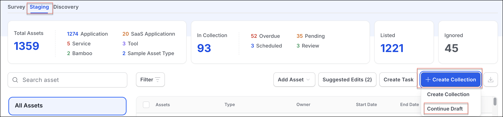
View Assets Summary
Once a collection is created, view the summary at the top of the Staging tab. This section provides real-time visibility of assets and collections.
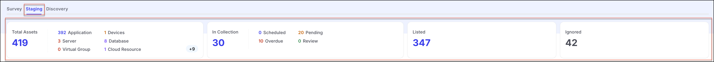
- Total Assets: This panel displays the overall asset count, sorted by asset types, including Application, Devices, Server, Database, Virtual Group, Cloud Resource, etc.
-
In Collection: This panel displays the overall collection count, sorted by the asset statuses:
- Scheduled: Number of assets that are part of a collection, but the collection start date is in the future.
- Pending: Number of assets that are part of a collection, whose current date falls between the collection’s start and due dates, and for which the asset questionnaire has not yet been answered.
- Overdue: Number of assets that are part of a collection, but the collection end date has passed without a response.
- Review: The Number of assets for which the questionnaire for the asset has been answered and is under Admin review.
- Listed: Number of assets that are added to staging, but are not part of any collection.
- Ignored: Assets that are excluded from further inventory process.
Note: To filter by a specific status, simply click on the corresponding status. The details of its assets will appear in the asset list table.
View Detailed Collection and Asset Information
Below the summary, information is divided into two main sections:
Collection List Panel (Left Side)
The Collection List Panel displays an overview of all the collections and gives the following data:
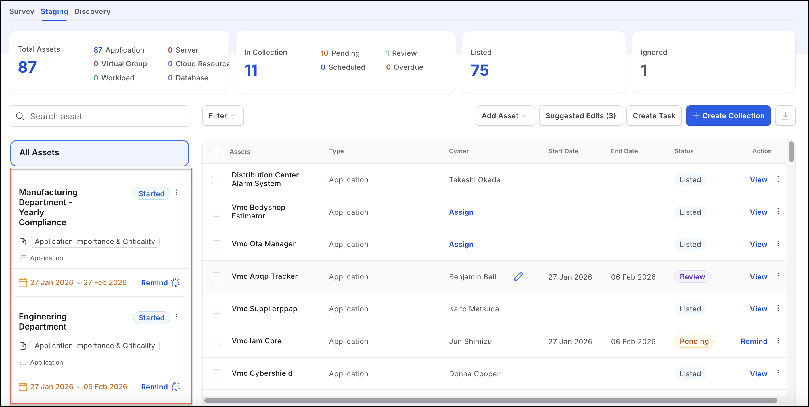
Note: To filter by a specific collection, click on that collection. The details of its assets will appear in the asset list table.
- Name of the collection
- The current status of the collection (e.g., Started, Scheduled, Overdue, Completed)
- Questionnaires that are assigned for collection
- Asset Type
- Start date and end date of the collection
- Action buttons such as: (Refer to the Collection Lifecycle Stages, Description, and Actions section for more details)
- Launch: Start sending the collection before the scheduled time.
- Remind: Send a follow-up reminder to the asset owners who haven’t responded.
- Escalate: Escalate overdue responses to the designated contacts.
- Click the vertical ellipsis (⋮) next to the collection’s status button to view the Edit Collection option. Click Edit Collection to open the Edit Collection screen. Update the data as needed, then click Update in the top-right side of the screen. The collection details are updated.
Note: Editing is supported only for collections in Started or Scheduled status. The Edit Collection option is disabled for all other statuses.
Asset List Table (Right Side)
The Asset List Table lists detailed tracking per asset.
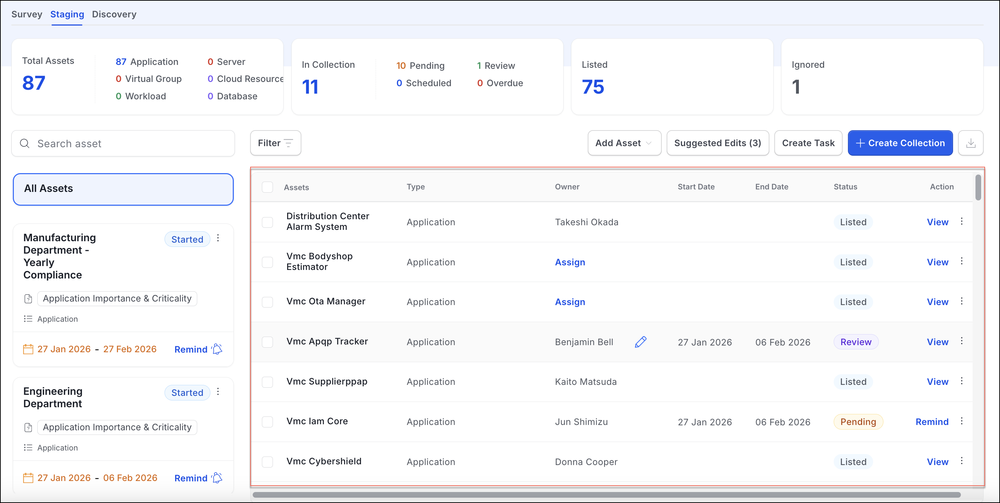
Note: Select All Assets on the left side to display the full list of assets across all collections, or select an individual collection to view its corresponding assets.
- Asset: The name of each asset.
- Type: The asset’s category (Application, Device, Server, Database, etc.).
-
Owner: The name of the asset owner. This column is editable, allowing you to change the current asset owner if needed. In some cases, such as when assets are imported from the IGA/IDP platform, the owner may not be assigned. In these situations, you can assign an owner using the Assign option.
- To change the current asset owner or assign an owner to an asset, perform the following steps:
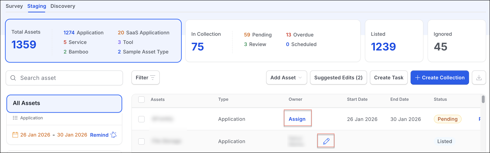
- Hover over the asset owner name to display the Edit icon and click it, or click Assign. The Assign App Owner screen appears.
- Select the appropriate asset owner from the dropdown list in the Asset Owner field.
- Click Assign Owner. The selected owner is now assigned to the asset or replaces the existing owner.
- To change the current asset owner or assign an owner to an asset, perform the following steps:
- Start Date: The date when the collection was started.
- End Date: The date by which the response is expected.
- Status: Shows the current response status (e.g., Listed, Pending, Overdue, Review, Scheduled)
- Action buttons such as: (Refer to the Asset Lifecycle Stages, Actions, and Conditions section for more details)
- Remind: Send a follow-up reminder to the asset owners who haven’t responded.
- Escalate: Escalate overdue responses to the designated contacts.
-
View: Opens a detailed screen displaying the asset’s Overview, Data, and Schema tabs.
-
Overview
- Displays the asset’s basic information, such as asset type, vendor name, asset owner and collaborator names, collection name, and its start and due dates, assigned questionnaires, including their completion percentages, etc.
- By default, the questionnaire’s questions and answers are shown in the attributes view. To see the question view, click Show Question View. To return to the attributes view, click Show Attributes View.
-
Data
- Displays the resource types supported by the application.
- Click any of the available resource types to retrieve the corresponding resource data.
-
Schema
- Displays the schema attributes available in the application.
- Once all information has been confirmed as accurate, the corresponding asset can be moved to the discovery phase by clicking the Move to Discovery button.
-
Overview
- Click the vertical ellipsis (⋮) next to an asset's action button to access additional options. The available options vary based on the asset's current status. Refer to the Asset Lifecycle Stages, Actions, and Conditions section for the available options per asset status.
- Ignore: Exclude the asset from further inventory processes at any stage of the asset.
- Move to Discovery: Click this button to move the applicable assets to the discovery phase.
- View Details: Opens a detailed screen displaying the asset’s Overview, Data, and Schema information. Once all information is confirmed as accurate, click Move to Discovery to advance the asset to the Discovery phase.
- Answer Questionnaire: Allows admins to respond to the questionnaires associated with any assets.
- History: Opens a screen to view a chronological log of all actions taken during the staging process. This option is available by default for all asset statuses.
Bulk Actions for Managing Assets
You can manage multiple assets at once by using bulk actions such as Ignore, Assign Owner, Move to Discovery, and Add to Collection.
Perform the following steps to ignore assets, assign asset owners, move assets to discovery, and add assets to collection in Bulk:
- Select the checkboxes to the left of the Assets column in the asset list table. Click the checkbox in the Assets column header to select all assets.
- Once assets are selected, the available bulk action options appear above the asset list table. The actions shown depend on the current status of the selected assets. Refer to the Asset Lifecycle Stages, Description, and Actions section to learn more about the asset statuses and their descriptions.
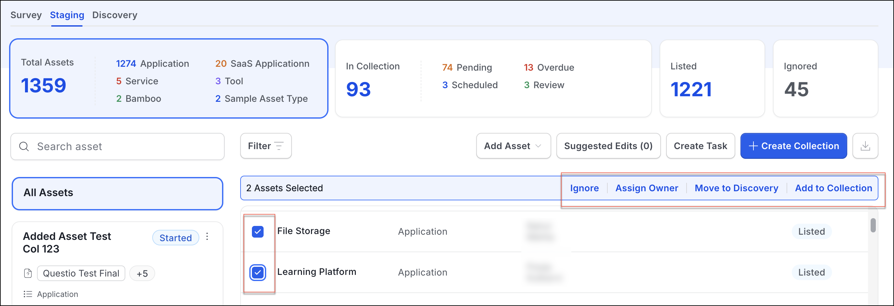
- Listed: Ignore, Assign Owner, Move to Discovery, Add to Collection
- Pending: Ignore, Assign Owner
- Review: Ignore, Assign Owner, Move to Discovery
- Ignored: No Action. The checkbox is disabled for the selection.
- Overdue: Ignore, Assign Owner
Ignore Assets
- Select the required assets using the checkboxes.
- Click Ignore. All selected assets are excluded from further inventory processing and moved to the Ignored status.
Assign Asset Owner
- Select the required assets using the checkboxes.
- Click Assign Owner. The Assign App Owner screen appears.
- Select the appropriate asset owner from the dropdown list in the Asset Owner field.
- Click Assign Owner. The selected owner is now assigned to the selected assets or replaces the existing owner.
Move Assets to Discovery
- Select the required assets using the checkboxes.
- Click Move to Discovery. The Confirm to move to discovery pop-up window appears.
- In the confirmation pop-up, click Move. All selected assets are moved to the Discovery stage.
Add Assets to a Collection
- Select assets with Listed status using the checkboxes.
-
Click Add to Collection to open the Create Collection screen. Refer to the Create Collection section for more details on assigning questionnaires, setting email templates, and defining due dates for completing the collection.
Note: The Add to Collection option is available only when all selected assets are in the Listed status. If assets with other statuses are selected, this option will not appear.
Add Assets
Use the Add Asset option to add assets manually. The following are the available options under Add Asset:
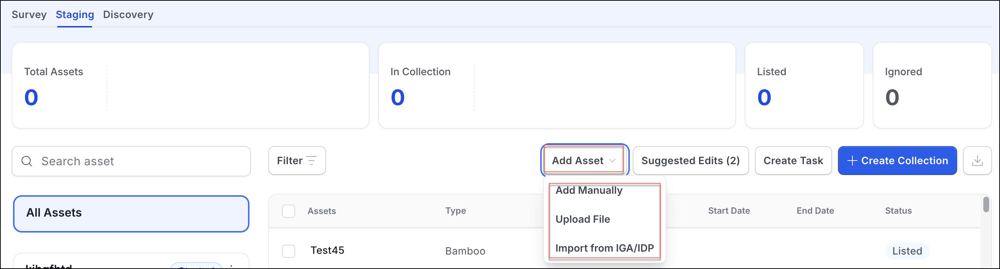
-
Add Manually: Perform the following steps to add a single asset manually:
- Click the Add Manually button.
- Enter the following basic details in the Add New Asset screen:
- Name: Enter the asset name, or select an asset from the list that appears when you click inside the field.
- Type: Enter the asset type. (For example, Application, Device, Server, Database, etc.)
- User Count: Enter the number of users using the asset.
- Owner Name: Enter the asset owner's name.
- Owner Email: Enter the asset owner's email ID.
- Internal Name: Enter the internal or nickname for the asset.
- Vendor Name: Enter the vendor name of the asset.
- Click Add Asset to add the asset to the asset list.
-
Upload File: Perform the following steps to add multiple assets manually by uploading a CSV or Excel file:
- Click the Upload File button.
- In the Upload File screen, click the Click to upload option to browse and select a file from your computer. Alternatively, you can drag and drop the file into the upload area.
- Click Upload to add assets to the asset list once the file is added.
-
Import from IGA/IDP: Use this option to import assets from the IGA/IDP platform. Perform the following steps:
- Click the Import from IGA/IDP button.
- Select your IGA/IDP application from the IGA/IDP Platform drop-down menu.
- Click Import to import all assets from the selected IGA platform.
Create Task
Use the Create Task button to create a task for yourself as an Admin or assign it to the appropriate asset owner. Refer to the Create Task section for detailed instructions on creating a task.
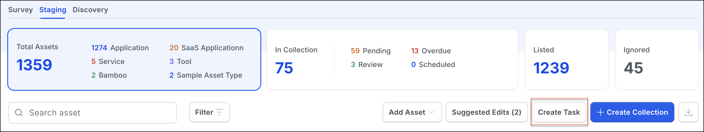
Other Features
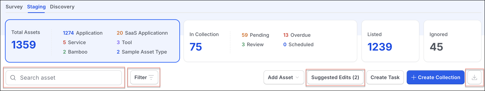
Search Asset
Use the Search asset search bar to locate a specific asset.
Filter
Use the Filter button to sort assets. Filter option includes:
- Asset Type (Application, Device, Server, Database, etc.)
- Added Through (CSV, Manual, Survey, SailPoint, Entra ID, Okta)
- Asset Status (Listed, Pending, Overdue, Review, Scheduled)
- Due Date
- Response Date
- Reminder Date
- Escalated Date
Suggested Edits
Use the Suggested Edits button to review suggestions from other asset owners on asset data.
- Click Suggested Edits.
- View the list of suggested edits for the assets on the Suggested Edits screen.
- Click View Details at the end of the asset line to review the edits.
- Review the changes on the asset data page. You can Accept or Reject individual suggested edits. If multiple edits are requested, you can also choose Accept All or Reject All, then click Done. Based on your selection, the status will change from Pending to Accepted, Rejected, or Partially Accepted.
- Use the Search Suggested Edits search bar to locate a specific suggested edit.
- Click the Download icon to download the suggested edits report. You can then sort the entries in the report by suggestion ID, asset name, suggested by, status, or suggestion date.
Download
Use the Download icon to export a collection of asset data for reporting or offline analysis.
Asset Owner Workflow: Completing and Responding to Asset Questionnaires
As an Asset Owner, perform the following steps to complete the asset questionnaire:
- Click Open Questionnaire to log in to the Identity Survey Hub portal by entering your email ID and authentication code after receiving an email notification for the completion of the asset questionnaire. You will then be directed to the questionnaire page.
- Alternatively, log in to the Identity Survey Hub portal to view the list of assets assigned to you and click Respond. Then select the questionnaire on the Asset Questionnaires panel to open the questionnaire page. If no questionnaire is assigned, the No questionnaires assigned pop‑up appears.
Note: The asset owner or collaborator can see only the Staging and Discovery tabs under Collection. The Survey and Inventory tabs are not visible to them. Those are accessible only to Admins. - In the questionnaire page, you can see or do the following:
- Asset Owner name
- Provision to add Collaborators. Perform the following steps to add collaborators:
- Click +Add Collaborator, and the Add Collaborators screen appears.
- In the Add Collaborators screen, select the collaborator's email address.
- Click Add to finalize. The collaborator receives an email notification.
- You see the collaborator’s name next to the Collaborators label.
- Click the Edit icon next to the collaborator’s name and click X to remove collaborator access.
- The questionnaire page features three main sections:
-
Question Category Overview
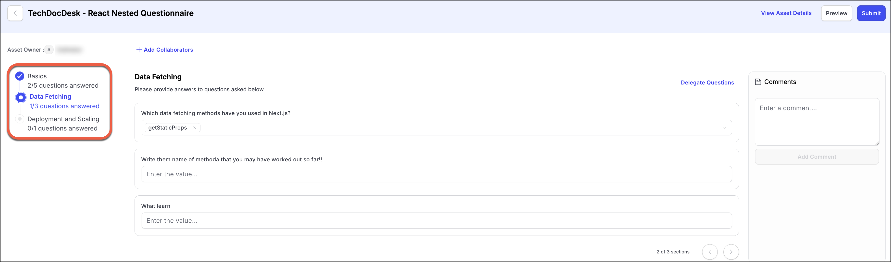
- Lists the categories assigned to the questionnaire.
- Shows how many questions each category contains and how many you have answered.
-
Questions and Answers
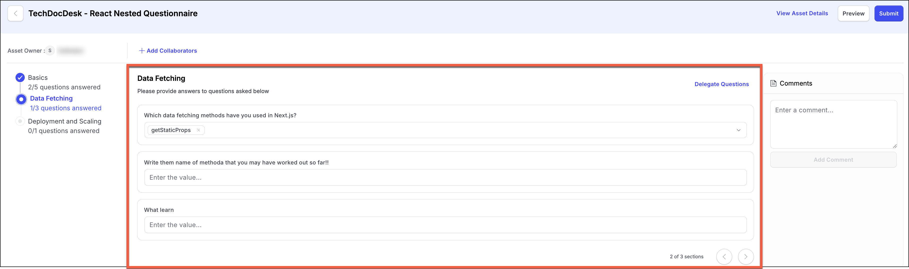
- Questions are displayed based on the selected category. To move to the next category, click on the category name in the left section to view its corresponding questions. Alternatively, use the right and left arrow keys to navigate between categories.
- Asset Owners enter answers directly in this area.
- The Asset Owner can delegate questions to Collaborators. Perform the following steps to delegate question(s) to a Collaborator:
- Click Delegate Questions, and the Delegate Questions screen appears.
- On the Delegate Questions screen, select the collaborator’s email address.
- Use Select All to assign all questions, or select individual questions.
- Click Delegate Questions to finalize. The Collaborator receives an email notification.
- You see the collaborator’s name under each delegated question.
- Click the Edit icon next to the collaborator’s name and click X to remove delegation.
-
Comments
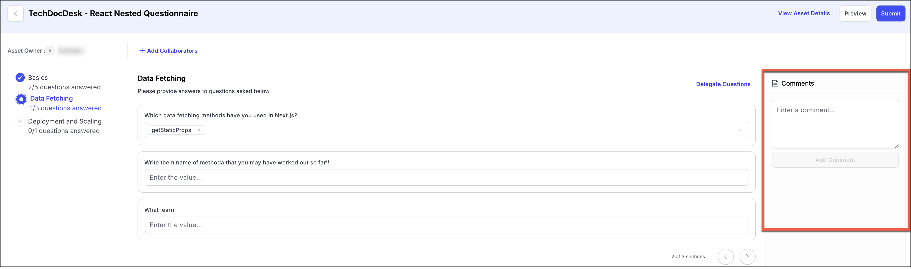
- Use the comment box to enter comments.
- Click Add Comment to post your comment. All comments appear below the Comment box with timestamps.
- Click the vertical ellipsis (⋮) next to each comment to Edit or Delete your comment. When editing, click Save Comment to apply changes. Click Delete to delete your comment.
-
Question Category Overview
- Use Preview to view questions and answers by category, or Download Preview to save the questionnaire for offline reporting.
- Click View Asset Details to view the basic information about the asset.
- Click Submit once all questions are answered and reviewed.
- Repeat steps 1 through 7 for each questionnaire if multiple questionnaires are assigned to the asset.
- When all questionnaires are answered for the asset, the status of the asset changes from Pending to Review. Refer to the Asset Lifecycle Stages, Description, and Actions section for more details on the asset status.
Collaborator Workflow: Completing and Responding to Asset Questionnaires
As a Collaborator, perform the following steps to complete the asset questionnaire:
Note: If a collaborator is assigned at the questionnaire level, they can access all questions in the questionnaire. However, if the collaborator is assigned at the question level, only the delegated questions will be visible to them in the Identity Survey Hub portal.
- Click Access Questionnaire to log in to the Identity Survey Hub portal by entering your email ID and authentication code after receiving an email notification for the completion of the asset questionnaire. You will then be directed to the questionnaire page.
- Alternatively, log in to the Identity Survey Hub portal to view the list of assets assigned to you and click Respond. Then select the questionnaire on the Asset Questionnaires panel to open the questionnaire page. If no questionnaire is assigned, the No questionnaires assigned pop‑up appears.
Note: The Collaborator can see only the Staging and Discovery tabs under Collection. The Survey and Inventory tabs are not visible to them. Those are accessible only to Admins. - In the questionnaire page, the top bar displays the following static details:
- Asset Owner name
- Collaborator name
- The questionnaire page features three main sections:
-
Question Category Overview
- Lists the categories assigned to the questionnaire.
- Shows how many questions each category contains and how many you have answered.
-
Questions and Answers
- Questions are displayed based on the selected category. To move to the next category, click on the category name in the left section to view its corresponding questions. Alternatively, use the right and left arrow keys to navigate between categories.
- Asset Owners enter answers directly in this area.
- The Asset Owner can delegate questions to Collaborators. Perform the following steps to delegate question(s) to a Collaborator:
- Click Delegate Questions, and the Delegate Questions screen appears.
- On the Delegate Questions screen, select the collaborator’s email address.
- Use Select All to assign all questions, or select individual questions.
- Click Delegate Questions to finalize. The Collaborator receives an email notification.
- You see the collaborator’s name under each delegated question.
- Click the Edit icon next to the collaborator’s name and click X to remove delegation.
-
Comments
- Use the comment box to enter comments.
- Click Add Comment to post your comment. All comments appear below the Comment box with timestamps.
- Click the vertical ellipsis (⋮) next to each comment to Edit or Delete your comment. When editing, click Save Comment to apply changes. Click Delete to delete your comment.
-
Question Category Overview
- Use Preview to view questions and answers by category, or Download Preview to save the questionnaire for offline reporting.
- Click View Asset Details to view the basic information about the asset.
- Click Submit once all questions are answered and reviewed. An email notification will then be sent to the corresponding asset owner.
- Repeat steps 1 through 7 for each questionnaire if multiple questionnaires are assigned to the asset.
- When all questionnaires are answered for the asset, the status of the asset changes from Pending to Review. Refer to the Asset Lifecycle Stages, Description, and Actions section for more details on the asset status.
Discovery
This phase involves the comprehensive collection of detailed IT asset data through extended questionnaires. The information gathered is then validated and enriched with the technical, security, operational, and access-model details needed to support the final onboarding process. This phase transforms the validated but high-level asset profile (from Staging) into a complete and authoritative system definition suitable for governance, compliance, and provisioning operations.
Assets are organized into collection groups based on asset type. Administrators create and configure these groups, while Asset Owners and Collaborators provide the necessary details. Once all information has been verified for accuracy, the corresponding assets can advance to the final inventory phase.

Roles & Their Responsibilities
The following table lists the key actors involved in the discovery phase and their respective responsibilities:
| Role | Responsibilities |
| Admin |
|
| Asset Owner |
|
| Collaborator |
|
Asset Lifecycle Stages, Description, and Actions
The table outlines the various stages an asset undergoes, along with the corresponding actions and descriptions associated with each stage:
| Status | Description | Available Action |
| Listed |
Asset is moved to discovery, but is not part of any collection Note: Assets with Listed status can be moved directly from Discovery to Inventory if the admin has sufficient information about the asset. |
Move to Inventory, View, View History |
| Scheduled | Asset is part of a collection, and the start date is in the future | View, View History |
| Pending | Asset is part of a collection, and the current date falls between the start and due dates | Remind, View, Answer Questionnaire, View History |
| Overdue | Asset is part of a collection, but the end date has passed without a response | Escalate, View, Answer Questionnaire, View History |
| Review | The questionnaire for the asset has been answered and is under Admin review | Review Details, View, Move to Inventory, View History |
Collection Lifecycle Stages, Description, and Actions
The table outlines the various stages a collection undergoes, along with the corresponding actions and descriptions associated with each stage:
| Status | Description | Available Action |
| Scheduled | The collection is created, and the start date is in the future | Launch |
| Started | The current date falls between the start and due dates, and not all asset questionnaires have been answered | Remind |
| Completed | All asset questionnaires in the collection have been answered | No action |
| Overdue | The due date has passed, and there are still unanswered asset questionnaires | Escalate |
Admin Workflow: Creating and Managing Collections
As an Admin, perform the following steps to create and manage a collection:
Create Collection
- Log in to the Identity Survey Hub portal and navigate to the Discovery tab located under Collection.
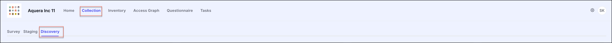
- Click Create Collection at the top right of the screen, and the Create Collection screen appears.
- Enter the following collection details on the Create Collection screen:
-
Basic Details
- Name of the Collection: Enter a name for your collection.
-
Assets & Questionnaires: Perform the following steps to select your desired assets and their respective questionnaire to create a collection:
- Click the Add Assets button, and the Add Assets screen appears.
- In the Add Assets screen, the Asset Library table displays only assets with a listed status that are not yet part of any collection.
- Select your assets and click Add to move them one by one to the Added Assets table.
- To remove an asset from the Added Assets table, click Remove.
- Click Save once you have chosen all the assets for your collection.
- The assets that you add will appear on the Assets & Questionnaires right‑side panel under the Create Collection screen, and the questionnaires will be auto-assigned based on the asset type and the app reference ID.
- Use Edit in the Assets & Questionnaires panel to add or remove assets as needed.
- Perform the following steps to reassign the questionnaire if the current one does not apply to you under the Assets & Questionnaires panel:
- Click the +Add button, and the Add New Questionnaire screen appears.
- In the Add New Questionnaire screen, the Questionnaire Library displays only the questionnaires that are currently available and applicable to your asset type and the app reference ID.
- Select applicable questionnaires and click Add to move them one by one to the Added Questionnaires table.
- To remove a questionnaire from the Added Questionnaires table, click Remove.
- Click Add Questionnaire once you have chosen all the questionnaires for your collection.
- The questionnaires that you add will appear on the Assets & Questionnaires right‑side panel under the Create Collection screen.
- You can add questionnaires to multiple assets at once by selecting the checkboxes to the left of the assets in the Assets & Questionnaires panel. The Add Questionnaire option will appear. Repeat steps 2 through 5 to add questionnaires for the assets.
- Start Date: Set the start date for the collection.
- End Date: Set the end date for the collection.
-
Templates
- Reminder Email Template: Choose the reminder email template from the dropdown list. Click the Preview option located above the dropdown to view the selected reminder email template in the Preview panel.
- Days Before Deadline to Send Reminder: Set how many days before the due date the reminder should be sent.
- Escalation Email Template: Choose the escalation email template from the dropdown list. Click the Preview option located above the dropdown to view the selected escalation email template in the Preview panel.
- Days After Deadline to Escalate: Set how many days after the due date the escalation should be sent.
- Escalate To: Enter the email address of the user who should receive escalation notifications.
-
Basic Details
- Perform the following steps to create or save your collection as a draft:
- Click Create to create the collection after completing all required fields and configurations.
- Alternatively, if you would like to come back later without creating the collection, click Save As Draft to save your progress and continue at your convenience.
- You can access your saved draft collections by clicking the Create Collection button under the Discovery tab, then choose Continue Draft to view your saved drafts. And then click Resume to continue your collection process.
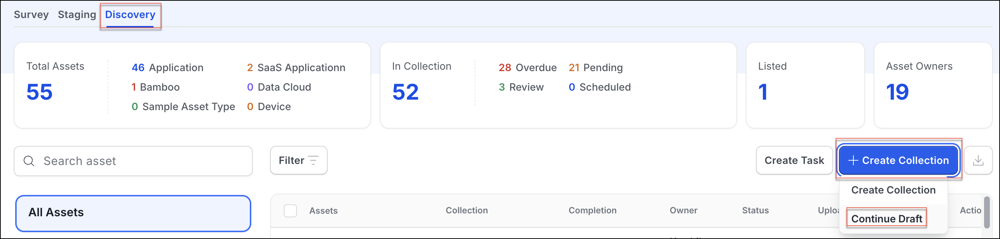
View Assets and Owners Summary
Once the collection is created, view the summary at the top of the Discovery tab. This section provides real-time visibility of assets, collections, and asset owners.
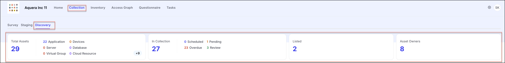
- Total Assets: This panel displays the overall asset count, sorted by asset types, including Application, Devices, Server, Database, Virtual Group, Cloud Resource, etc.
-
In Collection: This panel displays the overall collection count, sorted by the asset statuses:
- Scheduled: Number of assets that are part of a collection, but the collection start date is in the future.
- Pending: Number of assets that are part of a collection, whose current date falls between the collection’s start and due dates, and for which the asset questionnaire has not yet been answered.
- Overdue: Number of assets that are part of a collection, but the collection end date has passed without a response.
- Review: The Number of assets for which the questionnaire for the asset has been answered and is under Admin review.
- Listed: Number of assets that are moved to discovery, but are not part of any collection.
- Asset Owners: Number of asset owners who participated in the discovery.
View Detailed Collection and Asset Information
Below the summary, information is divided into two main sections:
Collection List Panel (Left Side):
The Collection List Panel displays an overview of all the collections and gives the following data:
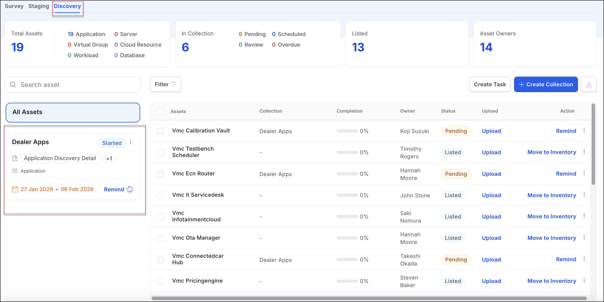
Note: To filter by a specific collection, click on that collection. The details of its assets will appear in the asset list table.
- Name of the collection
- The current status of the collection (e.g., Started, Scheduled, Overdue, Completed)
- Questionnaires that are assigned for collection
- Asset Type
- Start date and end date of the collection
- Action buttons such as: (Refer to the Collection Lifecycle Stages, Description, and Actions for more details)
- Launch: Start sending the collection before the scheduled time.
- Remind: Send a follow-up reminder to the asset owners who haven’t responded.
- Escalate: Escalate overdue responses to the designated contacts.
- Click the vertical ellipsis (⋮) next to the collection’s status button to view the Edit Collection option. Click Edit Collection to open the Edit Collection screen. Update the data as needed, then click Update in the top-right side of the screen. The collection details are updated.
Note: Editing is supported only for collections in Started or Scheduled status. The Edit Collection option is disabled for all other statuses.
Asset List Table (Right Side)
This Asset List Table lists detailed tracking per asset.
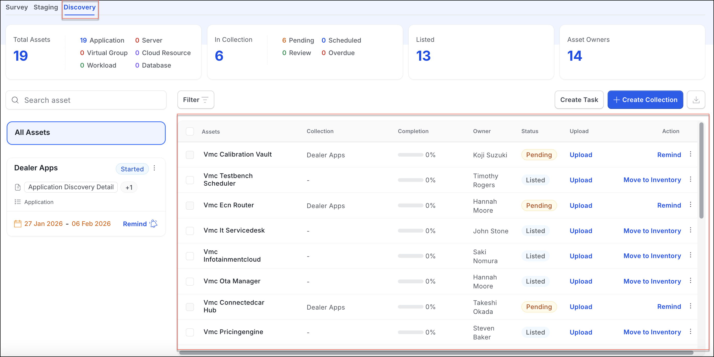
Note: Select All Assets on the left side to display the full list of assets across all collections, or select an individual collection to view its corresponding assets.
- Asset: The name of the individual asset.
- Collection: The collection group to which the asset belongs.
- Completion: The percentage of the assigned questionnaire completed to date.
- Owner: Name of the asset owner.
- Status: Shows the current response status (e.g., Listed, Pending, Overdue, Review, Scheduled)
-
Upload: You can upload all types of resource files that belong to this asset. Perform the following steps to upload a resource file:
- Click Upload.
- In the upload page, click the Click to upload option to browse and select files from your computer.
- Click Open to upload selected files. The uploaded files will appear under the Uploaded Files section.
-
Comments (Right side panel): Perform the following steps to add any relevant comments or notes:
- Use the comments box to enter comments.
- Click Add Comment to post your comment. All comments appear below the Comments box with timestamps.
- Action buttons such as: (Refer to the Asset Lifecycle Stages, Description, and Actions for more details)
- Remind: Send a follow-up reminder to the asset owners who haven’t responded.
- Escalate: Escalate overdue responses to the designated contacts.
- Move to Inventory: Move the applicable assets directly from the Listed status into the Inventory phase.
-
Review Details: Opens a detailed screen displaying the asset’s Overview, Data, and Schema tabs.
-
Overview
- Displays the asset’s basic information, such as asset type, vendor name, asset owner and collaborator names, collection name, and its start and due dates, assigned questionnaires including their completion percentages, etc.
- By default, the questionnaire’s questions and answers are shown in the attributes view. To see the question view, click Show Question View. To return to the attributes view, click Show Attributes View.
-
Data
- Displays the resource types supported by the application.
- Click any of the available resource types to retrieve the corresponding resource data.
-
Schema
- Displays the schema attributes available in the application.
- Once all information has been confirmed as accurate, the corresponding asset can be moved to the inventory phase by clicking the Move to Inventory button.
-
Overview
- Click the vertical ellipsis (⋮) next to an asset's action button to access additional options. The available options vary based on the asset's current status. Refer to the Asset Lifecycle Stages, Actions, and Conditions section for the available options per asset status.
- Move to Inventory: Click this button to move the applicable assets to the inventory phase.
- View: Opens a detailed screen displaying the asset’s Overview, Data, and Schema information. Once all information is confirmed as accurate, click Move to Inventory to advance the asset to the inventory phase.
- Answer Questionnaire: Allows admins to respond to the questionnaires associated with any assets.
- History: Opens a screen to view a chronological log of all actions taken during the discovery process. This option is available by default for all asset statuses.
Bulk Actions for Managing Assets
You can manage multiple assets at once by using bulk actions such as Move to Inventory and Add to Collection.
Move Assets to Inventory in Bulk
You can move multiple assets to Inventory at once. Perform the following steps to move assets to inventory in bulk:
- Select the checkboxes to the left of the Assets column in the asset list table. Click the checkbox in the Assets column header to select all applicable assets.
- Once assets are selected, the Move to Inventory option appears above the asset list table. This option is available for assets with the Listed and Review statuses. For assets in the Pending and Overdue statuses, the checkboxes are disabled. Refer to the Asset Lifecycle Stages, Description, and Actions section to learn more about the asset statuses and their descriptions.
- Click Move to Inventory. The Move to Inventory pop-up window appears.
- In the confirmation pop-up, click Move. All selected assets are moved to the Inventory stage.
Add Assets to a Collection
- Select assets with Listed status using the checkboxes.
-
Click Add to Collection to open the Create Collection screen. Refer to the Create Collection section for more details on assigning questionnaires, setting email templates, and defining due dates for completing the collection.
Note: The Add to Collection option is available only when all selected assets are in the Listed status. If assets with other statuses are selected, this option will not appear.
Create Task
Use the Create Task button to create a task for yourself as an Admin or assign it to the appropriate asset owner. Refer to the Create Task section for detailed instructions on creating a task.
Other Features
Search Asset
Use the Search asset search bar to locate a specific asset.
Filter
Use the Filter button to sort assets. The Filter option includes:
- Asset Type (Application, Device, Server, Database, etc.)
- Asset Status (Listed, Pending, Overdue, Review, Scheduled)
- Due Date
- Reminder Date
- Escalated Date
Download
Use the Download icon to export a collection of asset data for reporting or offline analysis.
Asset Owner Workflow: Completing and Responding to Asset Questionnaires
As an Asset Owner, perform the following steps to complete the asset questionnaire:
- Click Open Questionnaire to log in to the Identity Survey Hub portal by entering your email ID and authentication code after receiving an email notification for the completion of the asset questionnaire. You will then be directed to the questionnaire page.
- Alternatively, log in to the Identity Survey Hub portal to view the list of assets assigned to you and click Respond. Then select the questionnaire on the Asset Questionnaires panel to open the questionnaire page. If no questionnaire is assigned, the No questionnaires assigned pop‑up appears.
Note: The asset owner or collaborator can see only the Staging and Discovery tabs under Collection. The Survey and Inventory tabs are not visible to them. Those are accessible only to Admins. - In the questionnaire page, you can see or do the following:
- Asset Owner name
- Provision to add Collaborators. Perform the following steps to add collaborators:
- Click +Add Collaborator, and the Add Collaborators screen appears.
- In the Add Collaborators screen, select the collaborator's email address.
- Click Add to finalize. The collaborator receives an email notification.
- You see the collaborator’s name next to the Collaborators label.
- Click the Edit icon next to the collaborator’s name and click X to remove collaborator access.
- The questionnaire page features three main sections:
-
Question Category Overview
- Lists the categories assigned to the questionnaire.
- Shows how many questions each category contains and how many you have answered.
-
Questions and Answers
- Questions are displayed based on the selected category. To move to the next category, click on the category name in the left section to view its corresponding questions. Alternatively, use the right and left arrow keys to navigate between categories.
- Asset Owners enter answers directly in this area.
- The Asset Owner can delegate questions to Collaborators. Perform the following steps to delegate question(s) to a Collaborator:
- Click Delegate Questions, and the Delegate Questions screen appears.
- On the Delegate Questions screen, select the collaborator’s email address.
- Use Select All to assign all questions, or select individual questions.
- Click Delegate Questions to finalize. The Collaborator receives an email notification.
- You see the collaborator’s name under each delegated question.
- Click the Edit icon next to the collaborator’s name and click X to remove delegation.
-
Comments
- Use the comment box to enter comments.
- Click Add Comment to post your comment. All comments appear below the Comment box with timestamps.
- Click the vertical ellipsis (⋮) next to each comment to Edit or Delete your comment. When editing, click Save Comment to apply changes. Click Delete to delete your comment.
-
Question Category Overview
- Use Preview to view questions and answers by category, or Download Preview to save the questionnaire for offline reporting.
- Click View Asset Details to view the basic information about the asset.
- Click Submit once all questions are answered and reviewed.
- Repeat steps 1 through 7 for each questionnaire if multiple questionnaires are assigned to the asset.
- When all questionnaires are answered for the asset, the asset's status changes from Pending to Review. Refer to the Asset Lifecycle Stages, Description, and Actions section for more details on the asset's status.
Collaborator Workflow: Completing and Responding to Asset Questionnaires
As a Collaborator, perform the following steps to complete the asset questionnaire:
Note: If a collaborator is assigned at the questionnaire level, they can access all questions in the questionnaire. However, if the collaborator is assigned at the question level, only the delegated questions will be visible to them in the Identity Survey Hub portal.
- Click Access Questionnaire to log in to the Identity Survey Hub portal by entering your email ID and authentication code, after receiving an email notification for the completion of the asset questionnaire. You will then be directed to the questionnaire page.
- Alternatively, log in to the Identity Survey Hub portal to view the list of assets assigned to you and click Respond. Then select the questionnaire on the Asset Questionnaires panel to open the questionnaire page. If no questionnaire is assigned, the No questionnaires assigned pop‑up appears.
Note: The Collaborator can see only the Staging and Discovery tabs under Collection. The Survey and Inventory tabs are not visible to them. Those are accessible only to Admins. - In the questionnaire page, the top bar displays the following static details:
- Asset Owner name
- Collaborator name
- The questionnaire page features three main sections:
-
Question Category Overview
- Lists the categories assigned to the questionnaire.
- Shows how many questions each category contains and how many you have answered.
-
Questions and Answers
- Questions are displayed based on the selected category. To move to the next category, click on the category name in the left section to view its corresponding questions. Alternatively, use the right and left arrow keys to navigate between categories.
- Asset Owners enter answers directly in this area.
- The Asset Owner can delegate questions to Collaborators. Perform the following steps to delegate question(s) to a Collaborator:
- Click Delegate Questions, and the Delegate Questions screen appears.
- On the Delegate Questions screen, select the collaborator’s email address.
- Use Select All to assign all questions, or select individual questions.
- Click Delegate Questions to finalize. The Collaborator receives an email notification.
- You see the collaborator’s name under each delegated question.
- Click the Edit icon next to the collaborator’s name and click X to remove delegation.
-
Comments
- Use the comment box to enter comments.
- Click Add Comment to post your comment. All comments appear below the Comment box with timestamps.
- Click the vertical ellipsis (⋮) next to each comment to Edit or Delete your comment. When editing, click Save Comment to apply changes. Click Delete to delete your comment.
-
Question Category Overview
- Use Preview to view questions and answers by category, or Download Preview to save the questionnaire for offline reporting.
- Click View Asset Details to view the basic information about the asset.
- Click Submit once all questions are answered and reviewed. An email notification will then be sent to the corresponding asset owner.
- Repeat steps 1 through 7 for each questionnaire if multiple questionnaires are assigned to the asset.
- When all questionnaires are answered for the asset, the asset's status changes from Pending to Review. Refer to the Asset Lifecycle Stages, Description, and Actions section for more details on the asset's status.
Inventory
The final stage involves transferring fully validated and enriched asset data into the official asset catalog and onboarding it to the IGA/SSO platform. This ensures accurate tracking, compliance, and effective lifecycle management of IT assets. Maintaining an up-to-date IT inventory is essential as it boosts operational efficiency, enhances cybersecurity, supports regulatory compliance, and drives informed decisions on budgeting, maintenance, procurement, and asset retirement. Additionally, it helps prevent waste from duplicate purchases, over-licensing, and underutilization, while maximizing asset utilization and overall productivity.
To access the Inventory tab, log in to the Identity Survey Hub portal and navigate to the Inventory tab located on the main screen.
The Inventory tab is accessible only to Admins and offers a comprehensive overview of assets environment.
Inventory Summary Panel
The summary panel displays the following key metrics:
- Total Assets: Displays the count of validated assets in the inventory, sorted by asset types, including Application, Workload, Server, Database, Virtual Group, Cloud Resource, etc.
- Asset Owners: Displays the total number of asset owners associated with the assets listed in the inventory.
- IGA Onboarded: Displays the number of assets that have been onboarded to the IGA platform.
- IDP Setup Complete: Displays the number of assets with completed IDP configurations.
- Fully Configured SSO: Displays the number of assets with fully configured SSO.
Search and Filter Assets
- Use the Search Asset search bar located just below the summary panel to locate a specific asset.
- Enable Show Unscheduled Assets Only to view assets that are not yet scheduled for the file collection.
Asset List Table
Below the search bar, a table displays details for each asset. Column headers include:
| Column | Description |
| Assets | Name of the asset |
| Owner | Name of the asset owner |
| Data | Displays the resource types supported by the application |
| Status |
Current status of the asset.
|
| Last Discovered Date | Date when the asset data was updated |
Click View under the Action column to open a detailed screen displaying the asset’s Overview, IDP/IGA Data, Data, and Schema tabs.
Overview
- Displays the asset’s basic information, such as asset name, vendor name, asset owner name, user count, department, etc.
IDP/IGA Data
- Displays two additional sections: General and Sign on.
- For some applications, for example, when assets are imported from the IGA/IDP platform, the application's metadata is automatically populated under the General and Sign on sections.
Data
- Displays the resource types supported by the application.
- Click any of the available resource types to retrieve the corresponding resource data.
Note: This tab displays data only if a resource file is attached to the asset. If no file is attached, no information is displayed.
Schema
-
Displays the schema attributes available in the application.
Note: This tab displays data only if a resource file is attached to the asset. If no file is attached, no information is displayed.
Click the vertical ellipsis (⋮) next to the View button for any asset to view the History, Onboard IGA, Onboard SSO, Upload Updated Files, and Create SP Config Task options. These options are shown depending on the current status of the selected asset.
History
Opens a screen to view a chronological log of all actions taken from the staging to the inventory process.
Onboard IGA
Use this option to onboard assets that are in the inventory phase to the IGA platform. Perform the following steps:
- Click the Onboard IGA option. The IGA Application Onboarding pop-up window appears.
-
Configure the following settings under the Review section:
- Select your IGA application from the IGA Platform drop-down menu.
- Select a connector from the Connector drop-down menu. The following are the available options:
- SailPoint/Saviynt Connector: Select to onboard the application using the SailPoint/Saviynt's native connector.
- Aquera Connector: Select to onboard applications using the Aquera connector.
Notes:
- The Connector drop-down appears only if the asset is imported from the SailPoint or Saviynt application catalog.
If the asset is added through a survey or manually, this field will not be visible. By default, IGA onboarding is performed through the Aquera connector. In this scenario, after selecting your IGA application in the Review section, click Continue to proceed to the Configure section. Refer to the When Aquera Connector is Selected section for further configuration. - If the asset is imported from SailPoint, the Connector drop-down shows the following options:
- SailPoint Connector
- Aquera Connector
- If the asset is imported from Saviynt, the Connector drop-down shows the following options:
- Saviynt Connector
- Aquera Connector
When Aquera Connector is Selected
Perform the following steps to onboard assets when the Aquera connector is selected:
- Click Continue to proceed to the Configure section.
- Click Generate to auto-populate the SCIM URL and SCIM Token fields, enabling the asset to connect to the IGA platform.
- Click Continue to proceed to the Success section. Once the configuration is completed successfully, the corresponding asset will be onboarded onto the IGA platform.
When the SailPoint/Saviynt Connector is Selected
Perform the following steps to onboard assets when the SailPoint/Saviynt connector is selected:
- Click Continue to proceed to the next configuration section. The configuration sections vary for each application based on its type and are imported from SailPoint or Saviynt.
- After configuring all required fields on the configuration sections, click Continue to go to the Confirmation section.
- Click Continue again on the Confirmation section to finalize the onboarding. Once the configuration is completed successfully, the corresponding asset will be onboarded onto the IGA platform.
Onboard SSO
Use this option to onboard assets that are in the inventory phase to the SSO platform. Perform the following steps:
- Click the Onboard SSO option. The SSO Configuration screen appears.
-
Select the SSO protocol supported by the application. The available options are:
- SAML 2.0
- OpenID Connect
The appropriate configuration page is displayed based on the selected IDP connection.
OpenID Connect
Perform the following steps if you choose OpenID Connect:
- Select OpenID Connect.
- In the Protocol section, select your IDP connection from the drop-down list under Review SSO Protocol.
- Click Next to proceed to the Application section.
- Under Review Application Details, enter the following details:
- Application Name: Displays the application for which SSO onboarding was initiated. This field is auto-populated.
- Application Type: Enter the application type.
- Base URL: Enter the application base URL.
- Click Next to proceed to the Configuration section.
- In the Configuration section, enter the following details:
- Redirect URL: Auto-populated based on the Base URL provided in the Application section.
- Post Logout Redirect URL: Enter the URL to which users are redirected after logging out.
- Grant Type: Enter the grant type.
- Client Authentication: Enter the client authentication.
- Click Configure IDP. The system validates the provided data and automatically completes the IDP setup. Upon successful configuration, the asset status changes to IDP Configured.
SAML 2.0
Perform the following steps if you choose SAML 2.0:
- Select SAML 2.0.
- In the Protocol section, select your IDP connection from the drop-down list under Review SSO Protocol. Based on the selected IDP connection, the next screen may vary. For example, selecting Okta or Microsoft Entra ID displays different questionnaires and corresponding answers on the subsequent pages
Note: Mostly, details are auto-populated from the SSO Capabilities questionnaire, which is designed to assist with SSO onboarding of applications. If assets are added from the catalog while adding them manually, an application-specific questionnaire is populated to help with the SSO onboarding process. - Review the questionnaire and responses.
- Click Configure IDP at the bottom of the screen to proceed. The system validates the questionnaire inputs and automatically completes the Application and IDP Setup sections. Upon successful configuration, the asset status changes to IDP Configured.
Note: If some responses were not provided by the asset owner during the Staging or Discovery phase, those fields are not auto-filled in the Application and IDP Setup sections. In such cases, manually enter the required data to complete the IDP connection setup.
Completing Manual Configuration
After the IDP setup is completed, the administrator and asset owner must complete the remaining manual configuration steps required for SSO onboarding. The administrator creates a task for the asset owner to review and confirm the configuration.
Admin Creates a Review Task for the Asset Owner
The admin performs the following steps to create a task for the asset owner to review:
- In the SSO Configuration window, where the IDP setup completion confirmation message is displayed, click Create Task. The SSO Onboarding Wizard screen appears.
- In the Open self-help link section, review the clear instructions provided under the What you need to do section, and save the setup instructions document.
- Click Next to navigate to the Upload PDF section.
- Click Choose File under Upload setup instructions (PDF).
- Browse and select the setup instruction PDF that you saved, then click Open to upload the file.
- After the file is uploaded, click Next to navigate to the Create Task section.
- From the App Owner drop-down menu, select the asset owner email address.
- Click Create Task. The task is created with the setup instruction PDF attached, and an email notification is sent to the selected asset owner. The task appears under the Tasks tab for the asset owner. Refer to the Task section for more information.
- In the Confirmation section, click View task in task list to navigate to the Tasks tab and view all created tasks.
- Click Finish to complete the task assignment process.
Asset Owner Review and Confirmation
The asset owner performs the following steps to review and close the task:
- Open the assigned task from the Tasks tab.
- Review the setup instructions and verify that the SSO configuration has been completed correctly in the application.
- If the configuration is correct, click Complete to close the task. Once the task is closed, the asset is automatically onboarded to the SSO platform.
Upload Updated Files
Use this option to re-upload your resources file for any asset to update the resource data. Perform the following steps to upload resource files:
- Click the Upload Updated Files option.
- In the upload page, click the Click to upload option to browse and select files from your computer.
- Click Open to upload selected files. The uploaded files will appear under the Uploaded Files section.
- Click Done to finalize your updated resource data.
-
Comments (Right side panel): Perform the following steps to add any relevant comments or notes:
- Use the comments box to enter comments.
- Click Add Comment to post your comment. All comments appear below the Comments box with timestamps.
Create SP Config Task
For assets with IDP Configured status, the Create SP Config Task option is available. After clicking this option, you are navigated to the SSO Onboarding Wizard screen to complete the SSO onboarding process. Refer to the Admin Creates a Review Task for the Asset Owner section for detailed instructions on completing SSO onboarding.
Scheduling Assets for File Collection
This section describes how to schedule assets in Inventory for file collection.
Perform the following steps to create a schedule for the assets in Inventory:
- Select the checkboxes to the left of the Assets column in the asset list table. Click the checkbox in the Assets column header to select all assets.
- Once assets are selected, the Schedule option appears above the asset list table.
- Click Schedule. The Create Schedule screen appears, displaying all selected assets.
- Refer to the Create Schedule section for detailed instructions on scheduling file collection for assets.
Manage Correlation Rules
The Manage Correlation Rules option allows you to configure correlation rules for assets. For example, when an asset in the inventory is onboarded to the IGA application, the correlation key is essential to identify the same users between the inventory application and the IGA application, ensuring a smoother IGA process.
Add a New Correlation Rule
Perform the following steps to add a new correlation rule:
- Click Manage Correlation Rules. The Manage Correlation Rules screen appears.
- On the Manage Correlation Rules screen, click Add New Correlation Rule. The Add New Correlation Rule screen appears.
- On the Add New Correlation Rule screen, enter the following details:
- Correlation Rule Name: Enter the name of the correlation rule.
- Source Application & Attribute: Select the source application and its attribute.
- Target Application & Attribute: Select the target application and its attribute to establish the correlation.
- Click Add. The newly created correlation rule appears under the Manage Correlation Rules section.
- To update an existing correlation rule, click the Edit icon and make the necessary changes.
- To delete a correlation rule, click the Delete icon corresponding to the rule.
- Use the Correlation Rule Name search bar to quickly find a specific rule.
Download
Click the download icon on the right side of the search bar, enabling users to export the asset list for offline use or reporting.
Create Task
Use the Create Task button to create a task for yourself as an Admin or assign it to the appropriate asset owner. Refer to the Create Task section for detailed instructions on creating a task.
File Collection
Identity Survey Hub enables the system to collect and display identity data from a disconnected application using a file-based approach. Disconnected applications are those that do not provide APIs for direct integration with other applications, databases, or services. In such scenarios, files act as the primary source of identity data.
This section explains how administrators manage files using the File Collection module. It describes the procedures for scheduling file uploads, configuring reminder and escalation emails, setting up audit file uploads, and configuring SFTP connections. You can also configure the IGA global settings to determine whether a correlation check is performed against an IGA file during file uploads. This approach helps keep data up to date and supports the overall integrity of the application.
In the file collection workflow, administrators must add file-based applications, after which scheduled groups are created. The added applications can then be selected and assigned to the appropriate scheduled group for file upload processing.
Accessing File Collection
Log in to the Identity Survey Hub portal and navigate to the File Collection tab located on the main screen.
Note: The File Collection tab is not visible by default. It is available only to users who have opted in. If you can't see the tab, you can contact the Aquera Support team to enable access.
Add Application
Applications in the Inventory with an attached resource file are automatically added to the File Collection. Perform the following steps to add more applications manually:
Note: The fields marked with a red asterisk (*) are mandatory.
- Click Add Application. The Add New Application screen appears.
- Enter the following details in the Add New Application screen:
- Name: Enter a name for the application.
- Description: Enter a description of the application.
- Owner Email: Select the application owner's email address.
- Uploader Email: Select the email address of the person responsible for uploading the file.
-
Click Add Application. The application is added to the list of applications located under the dashboards. Once added, you must set up the application for file collection. Refer to the Configure Application for File Upload for more information.
Note: Any application you add manually to the File Collection is automatically added to the Inventory.
Configure Application for File Upload
Perform the following steps to configure the application for the file upload:
- Click the application name. The application configuration screen will appear.
- Enter the values for the following fields under the Configuration tab:
-
Basic Details:
- Display Name: Shows the display name of the application. This field is editable, so you can modify the name as needed.
- Description: Enter a description for your application.
-
Source Connection Type: Select one of the following options based on your requirements:
-
Direct Connection: Select to enable the application to read file data directly from the SFTP server configured in the FTP Configuration tab. When enabled, the following settings will appear:
- Select FTP Server: Select an FTP configuration that you added in the FTP Configuration tab.
-
Flat File: Select to upload a data file in CSV, XLS, XLSX, or ZIP format through the Upload tab. When selected, you must choose where the uploaded file will be stored from the following options:
- Aquera Storage: Select to store the uploaded file in Aquera storage.
-
SFTP Storage: Select to store the uploaded file on your SFTP server. When enabled, the following setting appears:
- Select FTP Server: Select an FTP configuration that you added in the FTP Configuration tab.
-
Direct Connection: Select to enable the application to read file data directly from the SFTP server configured in the FTP Configuration tab. When enabled, the following settings will appear:
-
Schedule Group: This field allows you to select a schedule group.
The default value is None if the application is not part of any group. If the application belongs to a scheduled group, the group name will be displayed. Click the dropdown list and select the schedule group based on your requirement. - Application Owner: Enter or select the email ID of the application owner from the list.
- Subscribe to error notification: Enable the toggle button to send notification emails to source owners for errors in the user data transactions. Click Edit Preference to select the error types for which you want to receive notifications. After you configure your preference, you will receive error notifications only for the selected error types. By default, all error types are selected.
- File Uploader: Enter or select the email ID of the file uploader from the list.
- Pick your protocol: The protocol is always SCIM, which automatically populates the fields in the Schema section.
- Copy this URL: This field displays the base URL of the application's API endpoint. Use this URL along with the token from the Credentials tab to retrieve user data.
- Authentication: Retrieve the token from the Credentials tab for authentication. Refer to the Authentication for more information.
- Tenant Attributes: Refer to the Aquera Tenant Attributes section for details.
-
Basic Details:
- Click Save Changes to finalize the configuration.
Aquera Tenant Attributes
The following are the Aquera tenant attributes:
- SFTP Server Folder Name: Enter the folder path on the SFTP server where the application should read the files. This field is required only if you are using SFTP Storage. The path entered here will be appended to the FTP Server Directory Path configured in your FTP Configuration. For example, if the FTP Server Directory Path is /Aquera/Files and the folder path specified in this tenant attribute is /Userdata, the application will read the data files from /Aquera/Files/Userdata on the SFTP server.
-
Validate Headers: Select to validate the header row in the uploaded file. When selected, the AI assistant automatically generates mappings for all columns in the file.
If you want to map only specific columns instead of all columns, do not select this checkbox. In this case, data will be retrieved only from the mapped columns, and any data in the remaining columns will be ignored.
Note: If your file does not contain a header row, do not select this checkbox. - Validate Role IDs in User File: Select to validate the roles assigned to users in the users file against the members listed in the roles file. If a user is assigned a specific role in the users file but is not listed as a member of that role in the roles file, the system will report an error during the file upload process. If this checkbox is not selected, this validation will not be performed.
- Is Using SFTP Server: Select this checkbox if your Storage Type is set to SFTP Storage.
-
Match the Users Against the Uploaded IGA File: Select to match users in the uploaded data file against the list of users in the uploaded IGA file.
Note: This option works only if the Global Correlation Check option is enabled in the IGA Configuration. -
IGA File Correlation Attribute: Enter the correlation attribute used to match users in the uploaded data file with users in the IGA file. When you upload the data file through the Upload tab, the user data will be matched against the users in the latest IGA file based on the specified correlation attribute. A report will then be generated listing any non-matching users in the Non-Matched Users column on the File Upload History section.
If you fail to provide the correlation attribute, the system will be unable to match the uploaded user data with the users in the IGA file, and the upload process will fail.
Note: Before uploading the user data file, you must first upload the IGA file used for matching through the IGA Configuration settings.
Generated Configuration
This section describes how the AI automatically generates a mapping configuration, either on its own or based on the user’s prompt. It explains how user, group, role, and entitlement data from uploaded files (CSV, XLS, XLSX, or ZIP) are automatically mapped to the corresponding SCIM attributes.
Perform the following steps to generate a mapping configuration:
- Click the Proceed to Configure button, and the Mapping & Transformation Assistant screen appears.
- Click the attachment icon at the prompt input box in the Assistant panel.
- Browse and select a file from your computer.
- Click Open to upload the selected file.
Notes:- The file you upload in this section is used only to generate the mapping configuration and is not stored anywhere.
- Once you have obtained the desired mapping configuration, you must upload the same file again in the Upload tab for further processing. Refer to the Upload section for more information.
- As a best practice, upload one resource file at a time. This helps ensure an accurate mapping without confusion from multiple files. If you need to upload multiple resource files, compress them into a single ZIP file before uploading for accurate mapping.
- Once uploaded, the AI Assistant analyzes the file and automatically identifies potential mappings, correlations, and transformation rules. The Output Viewer (on the right) displays a mapping Configuration summary with key parameters as displayed in the following image:
You can refine your configuration by adding more instructions in the prompt input box if you want a different mapping configuration. The AI Assistant will respond with the updated configuration. At this stage, your generated script and configuration are automatically saved for further processing. - In some cases, such as when a complex file is uploaded or the data in the file is unclear, the AI Assistant may interact with you to confirm its findings. The mapping configuration will not be generated in the Output Viewer until you provide confirmation, as displayed in the following image:
Once confirmation is complete, the Output Viewer (on the right) displays a mapping Configuration summary with key parameters. - Navigate to the Data tab under the Output Viewer to view the data retrieved from the uploaded resource file.
- Navigate to the Schema tab to view the attributes extracted from the uploaded resource files, along with their potential data types and automatically generated descriptions.
- Once you have finalized the mapping configuration, click the Exit full-screen () icon located at the top right corner of the Mapping & Transformation Assistant screen, and then click Save Changes on the connector configuration page to finalize your configuration.
- After saving your configuration, you can easily review, download, or modify your saved mapping configuration. Perform the following steps:
- Click Generated Configuration under the Configuration tab.
- Click the Export Configuration () icon to download the PDF file. The PDF provides an overview of the application, including the application name, description, creation date, last updated date, application owner, uploader information, current file & mapping configuration, and the generated schema for the attached resource file(s).
Note: The PDF file does not contain information about the configured tenant attributes. - Click Edit Configuration to reopen the Mapping & Transformation Assistant screen. Your previous configuration history will be loaded automatically.
- Click Clear all to remove the previous history and upload the resource file again. This ensures you get an accurate mapping without confusion from previous configurations.
- Refine your configuration by adding more instructions in the prompt input box. The assistant will respond with the updated configuration.
- Once you have finalized the mapping configuration, click the Exit full-screen () icon located at the top right corner of the Mapping & Transformation Assistant screen.
- Click Save Changes on the connector configuration page to finalize your configuration.
Authentication
The application supports Bearer Token authentication.
Perform the following steps to obtain the token:
- Switch to the Credentials tab and click Refresh to generate a new token.
Note: A token is automatically generated when the application is created, but it is not visible. Therefore, clicking Refresh generates a new token that can be saved for future use. - Copy the token and click Update.
Note: Make sure to save the token securely for future use, as it cannot be retrieved later. If you did not save the token and need it again, click Refresh to generate a new token.
Test Connection
Use Test Connection to check whether the authentication token is valid.
After configuring the token in the Credentials tab, click Test Connection. The system will verify the token and confirm whether it has the required access to retrieve resources.
If the token is valid, user data will be retrieved. If the token is invalid, an error message will appear.
Upload
The Upload tab allows you to upload files containing user, group, role, and entitlement data in CSV, XLS, XLSX, or ZIP format.
Perform the following steps to upload a file:
- Navigate to the Upload tab and click the Upload button.
- Browse to select the required file containing the data and click Open. The file will be uploaded only if it meets the following validation criteria:
- Before uploading a file, the mapping configuration must be generated using the same file. If you attempt to upload a file without generating the mapping configuration, the system will display an error.
Refer to the Generated Configuration section to learn how to generate the mapping configuration using a resource file. - If the application is added from Inventory, the resource file is already attached, and the mapping configuration is automatically generated by the system based on the attached file. In this case, you can directly retrieve the file data in the Data tab. If you want to change the mapping configuration or attach a new resource file in a different format for the application, you must first generate the mapping configuration using that file. Then, upload the file in the Upload tab.
- The user resource type file is mandatory for processing other resource type files. Without the user file, other resources such as groups, roles, and entitlements are not processed, and the system will display an error.
- If the uploaded file does not meet the validation criteria, error messages will be displayed. Resolve the validation errors in the file before uploading it again.
- If the uploaded file meets all validation criteria, the system confirms that the file has been uploaded successfully and displays the total number of records scanned.
- Before uploading a file, the mapping configuration must be generated using the same file. If you attempt to upload a file without generating the mapping configuration, the system will display an error.
-
Upload audit files only if audit file upload is enabled for the application. Refer to the Configuration or Advanced Configuration sections for details on enabling or disabling audit file uploads.
- The supported image formats are JPG, JPEG, JPE, JFIF, JFE, PNG, GIF, BMP, DIB, TIFF, TIF, WEBP, ICO, XBM, HEIC, HEIF, APNG, and AVIF. The maximum file size allowed is 50 MB.
- The supported video formats are MP4, WMV, MPG, MPEG, OGV, AVI, MKV, MOV, and WEBM. The maximum file size allowed is 50 MB.
After uploading audit proof files, the resource file is uploaded under the Upload tab. If the IGA File Correlation Attribute tenant attribute is configured and the IGA file is attached in the IGA Configuration to enable correlation checks, the system automatically correlates the data between the IGA file and the resource file for every upload, and shows the report of mismatched records generated during each data file upload in the upload page.
- Click Submit to finalize the upload.
After the upload is submitted or canceled, a new row will appear under the File Upload History section. Refer to the File Upload History section for more details.
File Upload History
You can view the file upload history of your application. The following are the available column headers:
Header |
Description |
| Upload On | The date and time when the file was uploaded. |
| Uploaded By | The email ID of the user who uploaded the file. |
| Due Date | The date by which the file must be uploaded. |
| Processed By | The system that processed the file. This field is populated only after the uploaded file has been successfully processed. Processing occurs when user data is retrieved through the Data tab on the connector configuration page, via API tools such as Postman, or when users are provisioned to platforms like Okta or SailPoint. |
| First Processed Date | The date and time when the uploaded file was first processed. This field is populated only after the file has been successfully processed. |
| Processed On | The date and time when the uploaded file was most recently processed. This field is populated only after the file has been successfully processed. |
| Accounts Scanned | The number of unique user accounts scanned from the uploaded file. |
| Non-Matched Users | The number of users who do not match those in the IGA file. Click View to see the report listing all non-matching users. |
| Status |
The status of the file upload. The following statuses are available:
|
| Data Files | Provides an option to download the uploaded files. |
| Audit Files | Provides an option to preview and download the uploaded image or video audit files. |
Download the File Upload Report
You can download all uploaded resource files, audit files, and a CSV file containing the application's upload history.
To download the report, click Generate File Upload Report. A ZIP file containing the uploaded resource files, audit files, and a CSV file with the upload history will be downloaded.
Advanced Configuration
The Advanced Configuration tab allows you to configure audit file uploads for the application. These audit files can include images or videos of user data that serve as audit proof.
Note: When the audit file configuration is updated in this tab, the same changes are reflected in the Configuration tab for the application.
Perform the following steps to configure audit file uploads for the application:
- Navigate to the Advanced Configuration tab. The Audit File Upload Configuration section appears.
- In the Audit File Upload Configuration section, provide the following information:
- Enter instructions for the file uploader in the Instructions for file uploader field. This field allows a maximum of 500 characters, including spaces.
Note: These instructions appear in the application’s Upload tab when a file is uploaded. - Select Enable Screenshot Uploading to allow image uploads as audit proof.
The file uploader will see an option to upload a Screen Capture (Image) in the application’s Upload tab.
You can enable the Mandatory toggle and select First time or Always, depending on whether the screenshot is required only for the first upload or for every upload. - Select Enable Video Uploading to allow video uploads as audit proof.
The file uploader will see an option to upload a Screen Recording (Video) in the application’s Upload tab.
You can enable the Mandatory toggle and select First time or Always, depending on whether the video is required only for the first upload or for every upload.
- Enter instructions for the file uploader in the Instructions for file uploader field. This field allows a maximum of 500 characters, including spaces.
- Click Save Changes to save the configuration.
Data
The Data tab displays the data from the resource files uploaded in the application. If all four resource files are uploaded, for example, Users, Groups, Roles, and Entitlements, you can view all four sections under this tab, each showing its corresponding data.
Click on any record to open a panel that shows detailed user information.
Schema
The Schema tab contains the attributes of all supported resource types. Each resource type is displayed in a separate subsection. For example, if User and Employee resource types are present, each will appear in a different subsection.
The Schema tab also provides key information about each attribute, such as the attribute name, data type, whether it is required or optional, and its mutability.
Once you have reviewed all the data, return to the main File Collection configuration page by clicking the left arrow located next to the application name at the top of the screen. This can be done at any stage, regardless of which tab you are currently viewing.
After the application setup for file collection is complete, you can start creating groups for the file collection schedule. Refer to the Scheduled Group for more information.
Scheduled Group
A Scheduled Group is a configuration in the File Collection module that allows administrators to group one or more file-based applications and define a schedule for their file uploads. It helps manage when and how files are collected, and enables the configuration of reminders, escalation notifications, and other upload settings for the associated applications.
Create a Schedule Group
This section explains how admins set a file upload schedule and notification configurations for applications. Perform the following steps to create a schedule for applications:
- Click the Create Schedule Group icon located at the top-left of the screen. The Create schedule group screen will appear.
- Enter a name for your schedule group in the Name field.
Note: The name must not exceed 255 characters. - Click Create. The newly created scheduled group will be displayed in the left panel under All Applications.
Schedule Group Details
Each schedule group shows the following details:
- Schedule group name
- Number of applications in the group
- Scheduled frequency
- The date when the schedule group was created
- The next due date for uploading the file
To search for a specific scheduled group, perform the following steps:
- Click the Search icon located above All Applications.
- Enter keywords in the Search Scheduled Group text box. The results are displayed dynamically as you type.
- Select the required scheduled group from the search results to view and manage its details.
To filter the scheduled groups, perform the following steps:
- Click the Doner menu icon located above All Applications. The following options will appear:
- Name: Select to filter scheduled groups by name. Use the Search names text box to find a specific scheduled group.
- Frequency: Select to filter scheduled groups by schedule frequency. Use the Search frequencies text box to find a specific frequency. Once a frequency is selected, the system displays the scheduled groups corresponding to the selected frequency.
- Select the required scheduled group from the filtered results to view and manage its details.
To edit a schedule group name, perform the following steps:
- Locate the schedule group you want to edit from the Schedule Group list and click the Edit () icon. The Edit Schedule Group pop-up window will appear.
- Modify the schedule group name as needed.
- Click Save to finalize the changes. The updated schedule group name will be displayed in the Schedule Group list.
To delete a schedule group, perform the following steps:
- Locate the schedule group you want to delete from the Schedule Group list and click the Delete () icon. The Delete Schedule Group confirmation pop-up window will appear.
- Click Delete to confirm deletion. The selected schedule group and all related activity logs will be deleted.
Note: You can delete a schedule group only if no applications are associated with that schedule group.
When you click on any scheduled group, the following tabs are displayed:
Dashboard
The Dashboard tab displays the file upload status of applications and user identity counts for the selected scheduled group. Data is displayed only after you add applications to the schedule group, as explained in the Applications section.
All the metrics shown in the dashboard correspond specifically to the selected scheduled group.
The dashboard section displays the following information:
- Total Applications: Displays the total number of applications in the selected scheduled group.
- Missing: Displays the number of applications in the scheduled group for which the file was not uploaded on or before the scheduled upload date.
- Ready: Displays the number of applications in the scheduled group for which the file was uploaded successfully on or before the scheduled upload date.
- Failed: Displays the number of applications in the scheduled group for which the most recent file upload failed due to an error.
- Overdue: Displays the number of applications in the scheduled group for which the file was not uploaded in the last two or more instances of the recurring upload schedule.
- Identity Count: Displays the total number of users associated with all applications in the scheduled group.
The Activity Logs show the history of email notifications sent to the recipients of the applications belonging to the schedule group. For further details, refer to the Activity Log section.
Applications
The Applications tab allows you to add applications to the schedule group. The schedule, reminders, and escalations configured for the schedule group will only apply to the applications that are part of the schedule group.
Perform the following steps to add applications to the schedule group:
- Click Add Application. The Add New Application screen appears.
- Select applications from the Application Library and click Add to move them to the Added Applications table. You can use the search bar to find a specific application before adding it.
- To remove an application from the Added Applications table, click Remove.
- Click Save once you have chosen all the applications for your schedule group.
- If you want to add more applications to the schedule group, repeat steps 1 through 4.
The Applications tab displays the details of the applications belonging to the schedule group. The following column headers are displayed under Applications:
| Header | Description |
| App Name | The file-based application name. |
| App Users | The owner who created the application and the users who are authorized to upload the file for the application. The file uploader must be an Application Owner, Superadmin, Admin, or Application Administrator. |
| Schedule Group | The schedule group to which the application belongs. |
| Due Date | The due date for the file upload, which is based on the schedule. |
| Last Upload | The date when the last file upload was done. |
| Status | The status of the file upload. Refer to the Application Status section for more details. |
| Correlation Check | Indicates whether the correlation check is enabled for matching the users in the uploaded file against the list of users in the IGA file. |
| Action |
Application-level actions. The following are the available actions: |
The following features are available in the Applications tab:
- Send Reminder and Escalation: Refer to the Send Reminder and Escalation section to manually send a reminder and escalation emails to the concerned stakeholders.
- Filter: Filter the applications based on the file upload status. The available options for selection are Missing, Ready, Failed, and Overdue.
- Download CSV: Download the available records in CSV format. When you download a CSV file after filtering the records in the tab, only the filtered records are present in the downloaded CSV file.
Schedule
The Schedule tab lets you set a schedule for uploading files for the file-based applications in the schedule group.
Perform the following steps to configure the schedule:
- In the File Upload Frequency field, set the frequency to upload the files. Select any one of the following frequencies from the dropdown list:
- Weekly: Select Weekly to schedule the file upload on a specific day of the week.
- Monthly: Select Monthly to schedule the file upload on a specific date of the month.
- Quarterly: Select Quarterly to schedule the file upload on a specific date of the quarter.
- Yearly: Select Yearly to schedule the file upload on a specific date of the year.
- In the Next File Upload Due Date field, set the next date to upload the file. The file upload schedule will be set based on this date and the frequency configured in the File Upload Frequency field.
- In the Timezone field, select a timezone from the dropdown list before setting up the schedule. Selecting a specific timezone will help teams working in different geographic locations work on the same project simultaneously without delays in scheduling. The due date for the file upload is decided based on this timezone setup.
- Click Set Schedule to save the schedule.
Reminder
The Reminder tab lets you choose how many days in advance the file uploaders will receive a reminder email to upload their files.
Perform the following steps to set the reminder:
- In the Send notifications of next upload date before field, select the number of days before which the file uploaders should get a reminder email. You can set multiple reminders.
- Configure the Email subject and the Notification Email Content fields of the reminder email. You can utilize the following variables in the subject and content of the reminder email:
- APP_NAME: The name of the configured application.
- START_DATE: The start date of the scheduled file upload period.
- DUE_DATE: The due date for uploading the file.
- LAST_SUCCESSFUL_UPLOAD_DATE: The date of the most recent successful file upload.
- LAST_UPLOAD_DATE: The date of the most recent file upload.
- LAST_UPLOAD_STATUS: The status of the most recent file upload.
- APP_OWNER: The email ID of the application owner.
- REMINDER_COUNT: The total number of reminder emails sent, including manual and automatic email triggers.
-
LAST_SUCCESSFUL_PROCESSED_DATE: The date when the uploaded file was most recently processed.
Note: The variables will be replaced by the actual values of those variables while sending the email.
- Click Set Reminder. The reminder will be set, and reminder emails will be sent to the file uploaders of the applications based on the configured settings.
Escalation
If the recipient of the reminder email fails to respond on time and misses the file upload, you can send an auto-generated escalation email to the relevant stakeholders.
Perform the following steps to configure the escalation:
- Click Add Recipient to add a user who should receive the escalation email. When clicked, the Send Notifications To and Days After Due Date fields appear.
- Enter the email ID of the user who should receive the escalation email in the Send Notifications To field.
- Enter the number of days after the file upload due date to send the escalation email (one or more days after the deadline) in the Days After Due Date field.
- To add more recipients, repeat steps 1 to 3.
- Configure the Email Subject and the Notification Email Content fields of the escalation email. You can utilize the following variables in the subject and content of the escalation email:
- APP_NAME: The name of the configured application.
- START_DATE: The start date of the scheduled file upload period.
- OVERDUE_DAYS: The days that have passed since the due date of the file upload.
- DUE_DATE: The due date for uploading the file.
- LAST_SUCCESSFUL_UPLOAD_DATE: The date of the most recent successful file upload.
- LAST_UPLOAD_DATE: The date of the most recent file upload.
- APP_OWNER: The email ID of the application owner.
- ESCALATION_COUNT: The total number of escalation emails sent, including manual and automatic email triggers.
-
LAST_SUCCESSFUL_PROCESSED_DATE: The date when the uploaded file was most recently processed.
Note: The variables will be replaced by the actual values of those variables while sending the email.
- Click Set Escalation. The escalation will be set, and escalation emails will be sent to the configured recipients and file uploaders of the application.
All Application View
You can select All Applications to view all application statuses, identity count dashboards, a search bar, filter options, an activity log for all applications, a download option, and a table listing all applications.
List of All Applications
This section lists all applications that have been added to different schedule groups, as well as those not part of any schedule group. The following column headers are displayed under the dashboards:
| Header | Description |
| App Name | The file-based application name. |
| App Users | The owner who created the application and the users who are authorized to upload the file for the application. The file uploader must be an Application Owner, Superadmin, Admin, or Application Administrator. |
| Schedule Group | The schedule group to which the application belongs. |
| Due Date | The due date for the file upload, which is based on the schedule. |
| Last Upload | The date when the last file upload was done. |
| Status | The status of the file upload. Refer to the Application Status section for more details. |
| Correlation Check | Indicates whether the correlation check is enabled for matching the users in the uploaded file against the list of users in the IGA file. |
| Action |
Application-level actions. The following are the available actions: |
Mute Notification or Unmute Notification
You can mute or unmute notifications for an application by clicking the Notification icon under the Action column. Reminder and escalation emails can still be sent manually, even when notifications are muted for an application.
Add the Application to the Schedule Group
You can add an application that is not yet scheduled to a schedule group by clicking the Calendar icon in the Action column. When you click this icon, the Move Application screen appears, displaying all existing scheduled groups. Select the desired scheduled group from the list and click Move. The application will then be added to the selected group.
Move the Application to Another Schedule
You can move an application from one schedule group to another by clicking the Calendar icon under the Action column. When you click this icon, the Move Application screen appears, displaying all existing scheduled groups. Select the desired scheduled group from the list and click Move. The application will then be moved to the selected group.
Notes:
- You must have at least two schedule groups to use this feature.
- If you move an application from one schedule group to another, the activity logs related to the application will remain unchanged and will not be moved along with the application.
Delete the Application
You can delete an application from the File Collection module by clicking the Delete Application icon under the Action column. When you click this icon, a Remove Application confirmation pop-up appears. Click Remove to delete the application from the File Collection module.
Send Reminder and Escalation
This section describes how to send reminders and escalations in bulk for applications.
Perform the following steps to send reminders and escalations for applications:
- Select the checkboxes adjacent to the application. Select the checkbox in the column header to select all applications.
- Once the checkboxes are selected, the following options appear above the list of applications column header:
- Send Reminder: Click to manually send a reminder email to the file uploaders of the selected applications.
- Send Escalation: Click to manually send an escalation email to the concerned stakeholders of the selected applications.
File Collection Dashboard
The dashboard section provides a summary of file upload statuses and associated user counts across all applications. The dashboard dynamically updates when you apply filters, click on a specific status, or search for an application.
The following information is available in the dashboard section:
- Total Applications: Displays the total number of applications in the file collection module.
- Missing: Displays the number of applications for which the file was not uploaded on or before the scheduled upload date.
- Ready: Displays the number of applications for which the file was uploaded successfully on or before the scheduled upload date.
- Failed: Displays the number of applications for which the most recent file upload failed due to an error.
- Overdue: Displays the number of applications for which the file was not uploaded in the last two or more instances of the recurring upload schedule.
- Identity Count: Displays the total number of users associated with all applications.
Filter
The Filter option allows you to quickly narrow down applications based on their file upload status.
Perform the following steps to apply a filter:
- Click Filter. A dropdown list appears showing the available status options: Missing, Ready, Failed, and Overdue.
- Select one or more checkboxes to apply the filter based on your use case. The application list table and file collection dashboard will be updated instantly to display only the applications that match the selected status(es).
Activity Log
The Activity Log displays the history of email notifications that have been successfully sent to recipients configured for manual and scheduled reminder and escalation triggers.
When you click Activity Log, the Activity Log pop-up window is displayed with the following details for reminder and escalation email notifications:
- An icon indicating whether the log entry is for a reminder or an escalation notification
- The application name for which the notification was sent
- The users to whom the notification was sent
- The date and time when the email was triggered
Filtering the Activity Log
You can filter the activity logs using the following options:
-
Filters: Click the Filters dropdown menu, and select one of the following filter options:
- Application: Select Application from the Filters dropdown and choose an application. Use the search box to quickly find a specific application. The activity log will display entries for the selected application.
- File Uploader: Select File Uploader and choose a user. You can use the search box to find a specific user. The activity log will show entries uploaded by the selected user.
- App Owner: Select App Owner and choose a user. Use the search box to locate a specific user. The activity log will display entries for applications owned by the selected user.
- Date: Click the Date dropdown menu to filter activity logs by the date on which the email was triggered. Select a start date and an end date from the calendar, and click Apply. The activity log will then display entries for the selected date range. The start time and end time are set to 00:00:00 and 23:59:59, respectively.
Click Reset to clear all applied filters and display all activity logs.
Downloading the Activity Log
Click the (download) icon to download the activity logs as a CSV file. If any filters are applied in the activity logs, the CSV file that you download will only contain the activity logs that match the applied filters.
Note: If you change your application name after an email has been triggered, the application name in the activity logs will show the previous application name. The new application name will appear for subsequent entries.
Download Applications
Click the (Download Applications) icon to download the records available on the status page in CSV format. When you download a CSV after filtering the records, only the filtered records will be saved in the CSV file.
Access Graph
The Access Graph provides a visual and analytical representation of how users interact with assets within the organization. It maps:
- Which users have access to which applications
- Which users belong to which groups
- What roles, entitlements, or permission levels are assigned to those users
This tab allows you to search for users, groups, roles, or entitlements across multiple applications listed in the Inventory. You can also filter by a specific application to view users associated with that application, along with their group memberships, roles, and entitlements, all displayed in a tree graph format.
Click Applications to view the application list from the Inventory and search for identity data associated with a specific set of applications. By default, all applications will be selected. To search for a specific application, enter its name in the Search Application text box. Click the checkbox adjacent to each application to select or deselect applications for your analysis. Your selection will be retained unless you change it again.
Resource Search
You can search for a resource type across multiple applications by selecting the resource type, attribute, operator, and entering its respective value under the Access Graph tab.
Below are a few examples of different search functions based on the different resource types:
User Search
Perform the following steps to search for a specific user record across multiple applications:
- Log in to the Identity Survey Hub portal and navigate to the Access Graph tab located in the top menu.
- Select User from the Select Resource Type dropdown.
- Select the user attribute from the Select Attribute Filter dropdown menu.
- Select the operator from the Select Operator dropdown.
- Enter the search value in the Enter Value textbox and click Apply. For example, select id as the attribute filter, Equal as the operator, and enter 2 as the search value, and click Apply. You can similarly search for a user using other attributes such as userName, displayName, title, userType, etc., by choosing the appropriate operator and specifying the corresponding value.
- All user data, including groups, roles, and entitlements across different applications where the user exists, will be displayed.
Group Search
Perform the following steps to search for groups across multiple applications:
- Log in to the Identity Survey Hub portal and navigate to the Access Graph tab located in the top menu.
- Select Group from the Select Resource Type dropdown.
- Select the group attribute from the Select Attribute Filter dropdown menu.
- Select the operator from the Select Operator dropdown.
- Enter the search value in the Enter Value textbox and click Apply. For example, select id as the attribute filter, Equal as the operator, and enter 2 as the search value, and click Apply. You can similarly search for a group using other attributes such as displayName, IANOwnerId, etc., by choosing the appropriate operator and specifying the corresponding value.
- All group data matching the search criteria will be displayed.
When a group is expanded using this icon , it will display the mapped users associated with that group. Check the Show Other Groups checkbox to display additional groups that exist for the selected application(s). If the number of users and groups exceeds five, pagination will be applied. Use the down and up arrows to navigate through all users and groups.
Click the vertical ellipsis (⋮) next to the group to display the Show Details option. Selecting Show Details will provide additional information about the group, including group ID, display name, description, and owner ID.
Role Search
Perform the following steps to search for roles across multiple applications:
- Log in to the Identity Survey Hub portal and navigate to the Access Graph tab located in the top menu.
- Select Roles from the Select Resource Type dropdown.
- Select the group attribute from the Select Attribute Filter dropdown menu.
- Select the operator from the Select Operator dropdown.
- Enter the search value in the Enter Value textbox and click Apply. For example, select id as the attribute filter, Equal as the operator, and enter 2 as the search value, and click Apply. You can similarly search for a group using other attributes such as displayName, IANOwnerId, etc., by choosing the appropriate operator and specifying the corresponding value.
- All role data matching the search criteria will be displayed.
When a role is expanded using this icon , it will display the mapped users associated with that role. Check the Show Other Role checkbox to display additional roles that exist for the selected application(s). If the number of users and roles exceeds five, pagination will be applied. Use the down and up arrows to navigate through all users and roles.
Click the vertical ellipsis (⋮) next to the role to display the Show Details option. Selecting Show Details will provide additional information about the role, including role ID, display name, and description.
Entitlements Search
Perform the following steps to search for entitlements across multiple applications:
- Log in to the Identity Survey Hub portal and navigate to the Access Graph tab located in the top menu.
- Select Entitlements from the Select Resource Type dropdown.
- Select the group attribute from the Select Attribute Filter dropdown menu.
- Select the operator from the Select Operator dropdown.
- Enter the search value in the Enter Value textbox and click Apply. For example, select id as the attribute filter, Equal as the operator, and enter 2 as the search value, and click Apply. You can similarly search for a group using other attributes such as displayName, IANOwnerId, etc., by choosing the appropriate operator and specifying the corresponding value.
- All entitlements data matching the search criteria will be displayed.
When an entitlement is expanded using this icon , it will display the mapped users associated with that entitlement. Check the Show Other Entitlements checkbox to display additional entitlements that exist for the selected application(s). If the number of users and entitlements exceeds five, pagination will be applied. Use the down and up arrows to navigate through all users and entitlements.
Click the vertical ellipsis (⋮) next to the entitlements to display the Show Details option. Selecting Show Details will provide additional information about the entitlements, including entitlement ID, display name, and description.
Application Search
Perform the following steps to search for a specific application and its related information:
- Log in to the Identity Survey Hub portal and navigate to the Access Graph tab located in the top menu.
- Select Application from the Select Resource Type dropdown.
- Select the required application from the Select Application dropdown menu. For example, Asset1290.
- All application data, including all resource types, such as users, groups, roles, and entitlements, will be displayed.
If the number of users exceeds five, pagination will be applied. Use the down and up arrows to navigate through all users. Click the vertical ellipsis (⋮) next to any resource types, such as groups, roles, and entitlements, to display the Show Details option. Selecting Show Details will provide additional information about the corresponding resource type.
Questionnaire
The Questionnaire section enables administrators to create and manage questionnaires used during the Staging, Discovery, Inventory, and Onboarding phases. It centralizes all questionnaire templates for easy access and management.
This section includes the following two subsections:
- Questionnaire Library: This section stores all questionnaire templates in one centralized location for easy access and reuse.
- Questionnaires: This section allows you to create, organize, and manage individual questionnaires.
Notes:
- The survey questionnaires are system-built and cannot be deleted. However, you can create a copy of them to create a new questionnaire. Custom survey questionnaires that you create can be edited or deleted, and can also be used to create new templates.
- When using the Create Copy feature, the usage depends on the source:
- If the copy is created from a survey questionnaire, it can be used only in the Survey section.
- If the copy is created from a collection, it can be used only in the Collection workflow.
- Cross-usage between Survey and Collection is not supported.
Create and Manage Questionnaires
Perform the following steps to create and manage a questionnaire:
- Log in to the Identity Survey Hub portal and navigate to the Questionnaire tab located in the top menu.
- Click the Questionnaires tab under the Manage Questionnaire section.
- Click Create Questionnaire, and the Create New Questionnaire screen appears.
- Enter the following details:
- Questionnaire Name: Enter a name for the questionnaire.
- Phase Type: Select the phase type from the dropdown list. Available options include Staging, Discovery, Inventory, and Onboarding.
- Asset Type: Select the asset type from the dropdown list. Available options include Application, Server, Virtual Group, etc.
- Description: Provide a description for the questionnaire.
- Click Continue. The Add New Categories screen appears.
- Select the checkboxes for the categories you want to include from the Question Library.
- Click Add to include the selected categories in the questionnaire.
- Enable the Mandatory toggle if you want to make the selected categories and their questions mandatory.
- Click Add Category to include additional categories. The Add New Categories screen appears again.
- Select more categories from the Question Library as needed and click Add.
- To add a custom category, click Add Custom Category. The Add New Category screen appears.
- Enter a name in the Category Name field and click Save.
- Use the Edit option to modify existing questions, add custom questions to existing categories, or add questions to newly created categories. Click Edit to open the questionnaire's edit page. On the edit page, you can:
- Edit questions and change their question types or categories.
- Delete a category using the Delete icon at the category level.
- Delete individual questions using the Delete option at the question level.
- Click Add More to add additional answer options based on the selected question type.
- Configure question logic, where selecting specific answers reveals additional related questions.
- Enable or disable the Mandatory toggle at the question level.
- Use the Add New Question to add custom questions to existing or newly created categories.
- Click Add New Question. The Add New Question screen appears.
- On the Add New Question screen, enter the following details:
- Question: Enter the question text.
-
Question Type: Select the question type. Available options include:
- Single Text Box: Allows a short text response.
- Textarea: Allows a longer, multi-line response.
- Radio: Allows selection of only one option from a list.
- Select: Displays a dropdown list with a single selectable option.
- Multi Select: Allows selection of multiple options.
- File Upload: Allows users to upload a file as a response.
- Question Category: Select the category for the question.
- Click Save. The question is added to the selected category.
- Click Save & Apply in the top-right corner of the screen to finalize the questionnaire after reviewing all required information. The questionnaire appears in the Questionnaires tab under the Manage Questionnaire section.
- Use the Search Questionnaire search bar to locate a specific questionnaire.
-
Click View Details for any questionnaire to view its categories and questions. Click Edit to modify the questionnaire as needed. The following are the two options available in the questionnaire edit screen:
-
Save & Apply: Use this option to save your changes directly to the same questionnaire.
Note: The Save & Apply option is not available for the global questionnaires. - Save as Copy: Use this option if you want to apply changes to a new copy of the questionnaire, leaving the original unchanged.
-
Save & Apply: Use this option to save your changes directly to the same questionnaire.
- Click the vertical ellipsis (⋮) next to a questionnaire to display the Edit, Delete, and Create Copy options.
-
Edit: Click this option to edit the questionnaire as per your requirement.
Note: The Edit and Delete options are not available for global questionnaires. They are non‑editable by design, but you can use them to create a new questionnaire. - Delete: Click this option to delete the corresponding questionnaire.
- Create Copy: Click this option to create a duplicate of the questionnaire with a different name. Modify and use the copied questionnaire without affecting the original.
-
Edit: Click this option to edit the questionnaire as per your requirement.
Managing Global Questionnaire
Perform the following steps to manage a global questionnaire:
- Click View Details for a global questionnaire to view its categories and questions.
- Click Edit to modify the questionnaire as per your requirement.
- Click Save as Copy to apply changes to a new copy of the questionnaire.
- Alternatively, click the vertical ellipsis (⋮) next to the questionnaire name, select Create Copy to create a duplicate of the questionnaire with a different name. Modify and use the copied questionnaire without affecting the original.
Include app-specific questionnaires
Enable the Include app-specific questionnaires checkbox to display questionnaires that are specific to each application. These questionnaires are named after the application itself and are designed specifically for that app. Instead of using a generic questionnaire for every asset type, you can use these application-specific questionnaires during the inventory process.
Task
Task Management provides a centralized workspace for tracking all Identity Survey Hub activities assigned to users. Tasks are generated during the Survey, Staging, Discovery, and Inventory Maintenance phases, and ensure that asset data is captured, validated, and reviewed in a timely manner.
Accessing the Tasks Tab
Log in to the Identity Survey Hub portal and navigate to the Task tab located in the main screen. The page displays the summary of task metrics at the top, search and filtering options, along with the task creation option, and a list of created tasks in a table format.
Task Dashboard Overview
The task dashboard provides a quick snapshot of all tasks in the system. At the top of the page, key metrics give real-time visibility into task progress, priorities, and due dates.
Task Status Summary
- Total Tasks: Total number of tasks in the system.
- Open: Number of tasks not yet started.
- In Progress: Number of tasks currently being worked on.
- Done: Number of tasks completed.
- Closed: Number of tasks that are formally closed.
Priority Summary
- Critical Priority: Number of tasks with the highest urgency.
- High Priority: Number of high-priority tasks.
- Medium Priority: Number of medium-priority tasks.
- Low Priority: Number of low-priority tasks.
Due Date Alert
- Past Due Date: Number of tasks that have crossed their due date.
Search and Filter
Search Task
Use the Search Task bar to quickly locate specific tasks by entering relevant keywords. The search works across task fields such as the task ID and Summary, and the results update dynamically as you type, making it easy to find the exact task you are looking for.
Filter Tasks
Click Filter to narrow down tasks using the following criteria:
- Assignee
- Task Type
- Task Status
- Reporter
- Priority
- Created By
- Approval Status
You can apply one or multiple filters at the same time to refine your results.
Clear All Filters
The Clear All option removes all active filters and restores the task list to its default view.
Task List Table
Tasks are displayed in a tabular layout. Each row represents a single task.
| Column Name | Description |
| ID | Unique identifier for the task |
| Summary | A short title summarizing task content |
| Task Status | Indicates task progress. For example, Open, In Progress, Done, or Completed. |
| Priority | It indicates the priority level of the task. For example, Low, Medium, High, or Critical. |
| Assignee | Person responsible for the task |
| Asset Name | Associated application |
| Created On | Date when the task was created |
| Due Date | Expected completion date |
| Reporter | The user who created or reported the task |
| Phase | Indicates the phase during which the task was created. For example, Survey, Staging, Discovery, or Inventory. |
Create Task
You can use the Create Task button to create a task for yourself as an Admin or assign it to the appropriate asset owner.
Note: The fields marked with a red asterisk (*) are mandatory.
- Click the Create Task button to open the Create Task screen.
- Enter the following data in the Create Task screen:
- Summary: Enter a short title describing the task.
- Description: Provide detailed information about the task.
- Status: Select the current status from the dropdown list. For example, Open, In Progress.
- Priority: Select the priority level from the dropdown list. For example, Low, Medium, High.
- Reporter: Select the reporter who requested the asset data change from the dropdown list.
- Assignee: Select the person responsible for completing the task from the dropdown list.
- Asset Name: Select the asset associated with the task from the dropdown list.
- Phase: Enter the phase in which the task is being created.
- Due Date: Enter the expected completion date or pick a date from the calendar.
- After entering all the required information, click Create Task. The task will be created, and notifications will be sent to both the reporter and the assignee.
- The created task will appear under the Task tab, where you can track all tasks in one place.
Task Management
To manage a task from the task list, perform the following steps:
- Click anywhere on a task row in the task list to view its detailed information.
- On the task details page, you can view the following information:
- Task ID, Summary, Priority level, and Status (displayed at the top)
- Task Type
- Due date
- Assignee
- Reporter
- Phase
- Description
-
Update the task status using the Task Status dropdown menu based on the progress. The available options are:
- Open: Task is created but not started
- In Progress: Task is actively being worked on
- Done: Task is completed
After selecting the current status, click Save to finalize your update.
- Use the Comments section to communicate updates, questions, or clarifications. To add and manage a comment:
- Click in the Add a comment text box under the Comments section.
- Type your message and click Add. The comment will appear under the Comments section with a timestamp.
- Click Edit to update your comment and Save to finalize your changes.
- Click Delete to remove the corresponding comment.
- If the task meets all requirements, the Admin or the assignee of the task will click Complete. The task status will then be changed to Closed status.
- The Activity Log automatically records all important changes to a task, from creation to completion. This helps track the task’s complete history. Examples of logged actions include:
- Task creation
- Status changes
- Adding comments
- Task completion
Bulk Update of Task Status
Perform the following steps to update the status of multiple tasks at once:
- Use the checkboxes to the left of the task ID column in the task list table to select one or more tasks. Select the checkbox in the column header to select all tasks.
- Once tasks are selected, the Bulk Update option appears above the task list table.
- Click Bulk Update. The Bulk Update window appears.
- On the Bulk Update window, choose the following options:
- Select Task Status from the Attribute drop-down menu.
- Select the appropriate status (Open, In Progress, or Done) from the New Status drop-down menu.
- Click Update. The status of the selected tasks will be changed to the status you selected.
Logs
The Logs tab helps you easily track and review activities happening within the system. It provides a clear record of system events, user actions, and application transactions, making it easier to monitor operations and troubleshoot issues when required.
To access the Logs tab, log in to the Identity Survey Hub portal and navigate to the Logs tab located on the main screen.
Note: The Logs tab is not visible by default. It is only available to users who have opted into the File Collection feature. If you do not see the tab, you can contact the Aquera Support team to enable access.
The Logs tab includes the following sub-tabs:
- Application: Displays all transaction details related to applications.
- Audit: Records events and changes within the system.
Application
The Application tab displays logs containing all transaction details for an application and shows the following column headers:
- Applications: The name of the application for which the log entry was created.
- Date: The date and time when the application log was generated.
- Exec Time: The time taken to complete the operation.
- Request ID: The unique request ID for the operation.
- Method: The HTTP method used in the operation.
- App Type: Indicates if the application is deployed in the cloud or on-prem.
- Request Source: The source that initiated the operation. Example: Aquera-Console, Postman
- Status: The HTTP status code.
- Resource: The resource path associated with the operation.
Click an application entry to view its detailed log on the right-hand side of the page, as displayed in the following image:
Searching Application Logs
You can search application logs by entering the value for any of the following options in the Filter events search box:
- Open Search: You can enter any text in the search box to find logs that contain the specified value. The results are displayed dynamically as you type. The system searches across all Application Log columns and returns log entries where the entered text appears anywhere in a column value.
-
Exact Search: You can enter text within double quotes (for example, "Schemas") to find logs that exactly match the specified value. The system will display only the log entries that exactly match the specified value.
Note: The string values entered in the filter are not case-sensitive.
Filtering Application Logs
You can filter application logs based on when application operations were executed.
- Use the dropdown menu at the top-right corner of the page to select a time range. The following are the available options:
- All
- 5 minutes
- 1 hour
- 6 hours
- 1 day
- Custom: Allows you to define a specific time range for filtering application logs. When selected, a calendar window opens, enabling you to choose the start and end dates and times. By default, the start and end times are set to 00:00:00 and 23:59:59, respectively. Once applied, the logs are filtered according to the selected date and time range.
- Click the Timezone icon () to choose whether to display log timestamps in your local time or in UTC. The displayed date and time will adjust based on your selection.
Click the Refresh icon() to reload the page content.
Audit
An audit log records events and changes that occur within the system, helping you track activities and monitor updates over time. Each audit log entry captures key details such as what action was performed, where it was performed, and when it occurred. Audit logs provide a clear history of user activities and system changes, making it easy to track actions and review past events.
The Audit tab displays logs with the following columns:
- Applications: The name of the application for which the log entry was created.
- Date: The date and time when the audit log was generated.
- Exec Time: The time taken to complete the operation.
- Request ID: The unique request ID for the operation.
- Method: The action performed.
- App Type: Indicates whether the application is deployed in the cloud, on-premises, or is file-based.
- Request Source: The source that initiated the operation. Example: Aquera-Console, Postman
- Status: The status of the operation.
- Resource: The resource path associated with the operation.
Searching Audit Logs
You can search audit logs by entering the value in the Enter value search box. Refer to the Searching Application Logs section for more information on how to search audit logs.
Filtering Audit Logs
Refer to the Filtering Application Logs section for more information on how to filter audit logs.